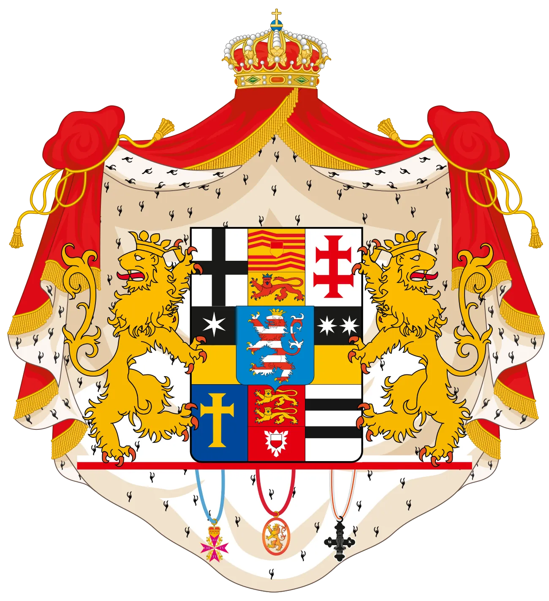
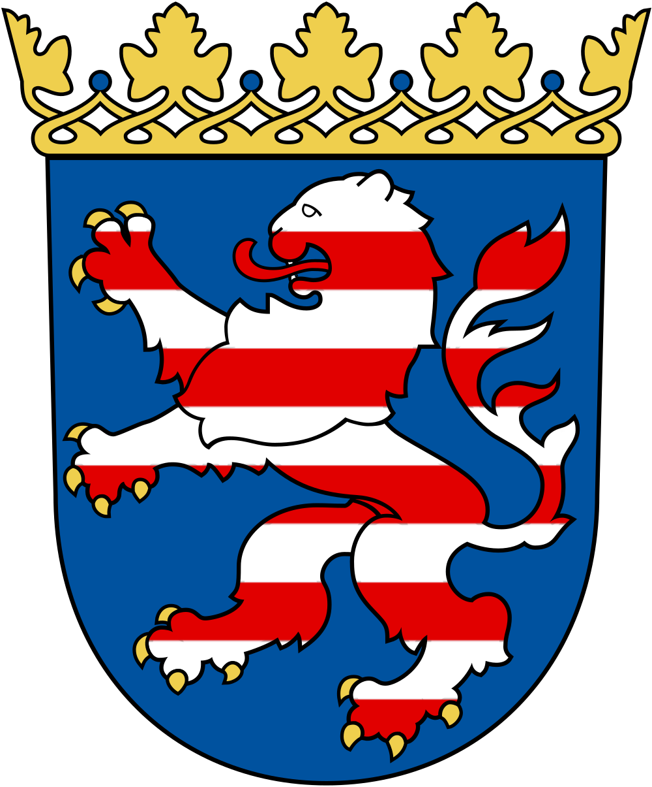

Deisel · Trendelburg · Churhessen → St. Louis · 1835 — 1903
Research compiled by Jed Johnson
Charles Research
A Genealogical Investigation
Charles
18351903
A transatlantic detective story — nine surnames, seven children, one missing baptism — and the Hessian village a Civil War sergeant left behind in 1859.
OriginDeisel · Trendelburg · Churhessen
ServiceSgt., Battery B · 2nd Missouri Light Artillery
Born in the parish complex of Trendelburg, Deisel, and Friedrichsfeld — somewhere inside the Konze / Kontzen / Contzen surname pool of Churhessen. After a multi-year investigation across many Hessian parishes, the German baptism record has not yet surfaced. The closest lead to date is a candidate, not a confirmation — an illegitimate boy named Carl, born 29 January 1835 at Heisebeck (mother Wehmann), three days off Charles’s recorded date and under a different surname.
The Atlantic crossing — most likely Bremen to New York — ca. 1859. He arrives under a surname that American clerks would record in nine different spellings over the next thirty years before the family settled on Johnson. Phonetic-variant searches across Bremen, Hamburg, and New York harbor records have not yet returned the manifest.
9 distinct American spellings5+ independent scribesBremen → St. Louis
Sergeant, Battery B, 2nd Missouri Light Artillery. Three years of garrison and fortification duty across three Missouri stations — the St. Louis garrison, the Mississippi River bend at New Madrid, and Fort Wyman at Rolla. A pension, granted 1891 for war-onset rheumatism, would later anchor the documentary trail.
3 Missouri postings6 fellow veterans as witnessesPension awarded 1891
★ Latest (11 June 2026): a Trendelburg + Deisel vitals pass added and corrected several dates. In Trendelburg: HTR confirmed Johannes Contze (b. 17 Jun 1804) as the grenadier Joh. Christoph Contze × Anna Catharina (Pfeil)’s earliest son (d. 4 Jan 1808); two phantom “burial crosses” were disproved; and the grenadier’s eldest daughter Maria Elisabeth Kontze × Joh. H. W. Enders (m. 10 Jun 1831; she d. 1834–35) and Johannes Kontze jr. (m. ~29 Apr 1832) were found in the marriage registers. A fresh scan of the 1819–1831 marriage register (220099) cleared the years 1828–1830 of any Contze bride, so the grenadier’s three younger daughters (Maria Wilhelmina b.1801, Maria Carolina Joannette b.1809, Anna Margaretha b.1811) show no Trendelburg marriage across 1828–37; only Maria Wilhelmina’s 1819–1827 window remains to be checked via a regional index. In Deisel: a FamilySearch communal-tree harvest recovered the three née-Konze women’s own birth and death dates — Catharina Elisabetha Kontze (the Weisenbach/Schildknecht wife, b. 12 Oct 1771, d. 21 Jun 1839), Charlotte Konze (the Meimbresse wife, b. 14 May 1806, d. 5 Feb 1879) and Maria Sophia Kontze (the Schildknecht wife, b. 27 Apr 1783, d. 7 May 1812) — plus confirmed deaths for Philipp Konze (b. 1824, d. 19 Jan 1893) and traced Ludwig Konze (b. 1836) to Frankfurt (m. 1864). The same tree pass added Trendelburg deaths for Johannes Kontze jr. (1794–1840) and Anna Catharina Kontze (1783–1822, × Tönjes), and confirmed Carl Ludwig Konze (1804–1862). A new lead worth flagging: the tree carries a St. Louis Konze family of Anton Wilhelm Konze (× Henriette Brennecke) with nine children — incl. Ernst H. Konze (1868–1947) and grandson Ernest Russel Konze (1902–1978), all St. Louis. His 1887 obituary and the church death register both give his death-age as 81 (→ b. 1806), confirming he is our Trendelburg-born Anton Wilhelm Contze (b. 1806) rather than the tree’s census-based “~1820 Darmstadt” — a documented Trendelburg-Konze presence in Charles’s own city. A targeted HTR sweep of the marriage register cleared every year from 1820 through 1837 (only 1819 and 1822 unread) with no Contze bride — so the grenadier’s daughter Maria Wilhelmina had no Trendelburg marriage. Both grenadier daughters’ baptisms (Maria Carolina 1809, Anna Margaretha 1811) were then located in 220096 and carry no death-cross — so, with no marriage either, both left the parish. And a long-standing record was corrected: “Johann Friedrich Wilhelm Konze, b. 1861 (Nottaufe)” is not an infant at all — the 220108 registers show him as an adult Musketier (soldier) at Cassel, son of Ackerbürger Johann Christoph Kontze, who fathered a child by Marie Elisabeth Christine Ellermeyer (1862) and married her in 1865. In Gottsbüren, Maria Caroline Wichard geb. Jungconze (b. 1807, dau. of the tailor Johannes Jungconze × Caroline Enders) was traced to a death of ~29 Jun 1855 via her baptism margin. The person-level census stands; no Charles candidate emerged. (Note: tree dates are GeneDana/Archion-based and unsourced — verify against the registers before merging.)changelog →
Where this all started — the 2020 AncestryProGenealogists research journal
In February – June 2020, AncestryProGenealogists (Paul A. Schmidt & Brian A. Podoll) ran the first formal investigation. Their 11-page research journal turned the half-legible St. Marcus marriage entry “of Deisse, Churhessen” into the working hypothesis that has driven everything since: Deisel, in Kreis Hofgeismar, with its Lutheran parish on Archion. Two Konze candidates surfaced (Ludwig 1836; Karl 1839) and were ruled out by the end of the engagement, leaving the surname-and-village anchor still standing.
Every parish walked, every Schräder email, every reconstruction version on this site is downstream of that 2020 finding.
Before any of the work catalogued elsewhere on this site, there was a four-month research engagement with AncestryProGenealogists (February – June 2020). Researchers Paul A. Schmidt and Brian A. Podoll produced the 11-page journal that turned a half-legible St. Marcus marriage entry — "of Deisse, Churhessen" — into the working hypothesis the rest of the project has been building on, refining, and (in places) overturning.
Goal
Trace the paternal Johnson / Gonnson line of Charles L. Johnson / Gonnson (1835 – 1903), said to be a native of Churhessen, Germany.
Researchers
Paul A. Schmidt · Brian A. Podoll AncestryProGenealogists, Salt Lake City
Dates
February 2020 – June 2020 11-page journal · 16 sources reviewed · 15 cited documents (Doc 1–5 + Doc A–O)
The big finding
"Deisse" is Deisel, Kreis Hofgeismar, Hessen-Nassau. Lutheran parish: Deisel. Trendelburg borders it and has its own parish. Two Konze candidates surfaced in Deisel baptisms; both were ruled out within the engagement, but the toponym anchor held — and still holds.
The seven-strategy 2020 research plan
Look for possible alternatives to Deisse in gazetteers.
Identify Freundburg, and look for alternative places in Hessen-Nassau.
Search available baptism records for any places that may refer to those places — especially Diesel.
Search passenger lists and naturalization records for further clues.
Search St. Louis and Missouri sources for Charles after he arrived in the U.S.
Identify baptism sponsors for Charles's children not obviously related to his wife.
Continue searching the St. Marcus registers for other Johnsons / Gonnsons who might be related.
What the 2020 searches returned
Search
2020 finding
Hansen, Map Guide, Hessen-Nassau II
Deisel, Kreis Hofgeismar — Lutheran parish — confirmed as the match for "Deisse, Churhessen."
Deisel baptism register, 1830–1861
Two candidates surfaced: Ludwig Konze (b. 25 Oct 1836) and Karl Konze (b. 7 Jun 1839). No Gonnson / Johnson surname present in the parish at all — Konze was the closest.
Frankfurt civil records, 1864
Ludwig Konze married Wilhelmine Schleifer 11 Nov 1864 in Frankfurt — eliminating Ludwig as Charles, who married Auguste Kreichelt in St. Louis 7 Jan 1866.
Deisel marriage register 1830–1901; deaths 1830–1956
Nothing — checked as alternative readings of Deisse (Dies / Diez) and Freundburg (Freudenberg → Schierstein).
Surname distribution across Germany
Konze concentrates in NRW Rhine area (176 households; 18 in Hessen). Gonnsen is North Frisian (25 households). Gansen in NRW / Rhineland-Palatinate (266 households). The phonetic-drift framing — J / G / K — was set up here.
What's confirmed, refined, and ruled out since 2020
CONFIRMED
Deisel as the working parish anchor. It has held up as the focus across the entire 2026 investigation — Deisel's KB 218821, 218824, 218836, 218842, 218851, 218860, 220093, 220096, 220099, and 220108 have all been re-walked — though the Deisel/Trendelburg origin itself remains a ★ Working phonetic decoding, not a record-confirmed birthplace.
Charles's birth date: ~26 January 1835 — day and month from St. Marcus burial entry no. 3393 (Doc N); the censuses report the year inconsistently (1880 → 1841, 1900 → Nov 1836), so only the burial register fixes 1835; the canonical figure used everywhere on this site, held ★ Working because every source traces to Charles's own testimony rather than an independent record.
The J / G / K spelling-drift framing — every St. Marcus baptism of his seven children uses a different rendering of the same surname.
REFINED
Both Deisel Konze candidates are eliminated — Ludwig in 2020, Karl structurally in 2026. Other Konze entries (especially KB 218842 Entry 195 in 1835) have replaced them.
"Freundburg, Kurhessen" from the Civil War service record (Doc O) is now read as a clerk's mishearing of Trendelburg, the parish town adjacent to Deisel — not Freudenberg on the Rhine.
The seven non-Kreichelt baptism sponsors from 2020's Doc G–L list have started to be worked (Erwin Spraul on Doc K).notes
RULED OUT
Freudenberg / Schierstein on the Rhine (160 mi south). The narrative that "Charles took the Rhine to a port" has been replaced — the Liverpool → New York 1859 Resolute manifest is now documented.notes
Holzappel, Freiendiez as parishes of origin.
Carl Ludwig Kontzen (b. Bau bei Gressenich 1834; m. Nothberg 1861) — wrong region, wrong birth window.
The 2020 Doc Index — Charles's U.S.-side foundation
The journal's appendix indexes the U.S.-side records the client supplied at the start of the engagement. Reproduced here in compact form; the curated note page below has the full table.
Doc
Source
Key fact
A
Death Certificate no. 10619
Died 17 Dec 1903 St. Louis, age 69, watchman, 40 yrs in U.S.
B
1900 Census, Peter Kuhn household
Charles Johnson, boarder; Nov 1836; widowed; immig. 1859; nat.
C
1890 Veterans Schedule
Charles Gonnsen, sergt., Co. B 2nd MO Vols, enl. 7 Nov 1863.
D
1880 Census, 1534 Jackson St.
Charles Gonson, age 39; cotton-press worker; wife Guissie.
E
St. Louis Civil Marriage Reg., 1866
Charles Gonnson "of Deisse, Churhessen" + Augusta Kreischelt.
F
St. Marcus Marriage, p. 135 no. 676
The "Deisse, Kreis Cassel" entry — the toponym anchor.
G–L
St. Marcus Baptisms 1868–1881
Six baptisms, five distinct surname spellings (Jansen recurs): Gonnson, Gansen, Gonsen, Jansen, Konsen, Jansen. The full project surname trail across all 1866–1896 attestations is nine: Gonnson · Gansen · Gonsen · Konsen · Gonson · Jansen · Konzen · Gannsen · Conson.
M
Civil War Pension Case File 684507
Family roster, address history 1518 S. 7th → 718 Gates → 2409 Broadway → 2412 S. 2nd → 1308 Dekalb.
N
St. Marcus Burial, no. 3393
Born 26 Jan 1835 in Germany; buried 19 Dec 1903 Old St. Marcus.
O
Compiled Service Record, Co. G 2nd L. Artillery
L. Charles Gannsen, age 23, born Freundburg, Kurhessen.
✦ Read the full 2020 research journal online — no PDF needed
The complete 2020 AncestryProGenealogists Research Journal has been transferred to a webpage so anyone can read the original investigation directly in their browser, even without access to the PDF or a local copy. Every source consulted, every finding, and the full Doc A–O appendix from the journal appendix is included.
Citation: AncestryProGenealogists, Research Journal — Jed Johnson (Gonnson 1), prepared June 2020, researchers Paul A. Schmidt & Brian A. Podoll. 11 pages. Private deliverable; archived locally as AncestryProGenealogists_Journal_June2020.pdf; full transcription available as a readable webpage.
Charles in America
★ The first known photograph of Charles
Charles Johnson Sr. (Carl / Charles Gannsen, 1835–1903) at the Louis Roth studio, 2006 South Broadway, St. Louis — 0.7 miles from his DeKalb Street home. The studio operated 1890–1907; the photograph was taken between Auguste Kreichelt's death (late 1896) and Charles's own (December 1903), making him 62–68 years old. The verso reads "Johnson · Father of Charles · Father of Henry · Father of Robert."
Source: Discovered September 2025 by descendant Maximilian J. in a moving box in Independence, MO, while hanging family photos. Shared with Jed Johnson via email 18 September 2025; historical context (studio, dating, age range) established in Jed's 21 September 2025 reply. Now hosted on the FamilySearch profile Charles Johnson Sr. · LZXC-6GB.
Last updated · folded in the June 2026 St. Louis sweep — the original 1903 death certificate was read directly, and the German-language obituary, probate, and StLGS-index avenues were searched to exhaustion (all negative for a Hessian birthplace)
A life fully documented, not a closed file. Forty-four years in St. Louis, three years in a German immigrant artillery battery, one St. Marcus wedding, seven children, six addresses, one $12 monthly pension. The Hessian-born immigrant whose surname the American records never settled — written Gannsen, then Konsen, and at last Johnson — who became Charles Johnson, Sr. — from an unknown 1859 port of arrival to a south-side watchman's grave at Old St. Marcus in 1903.
Eight anchoring events across sixty-eight years — birth, immigration, enlistment, marriage, pension, Auguste's death, Soldiers' Home, and death — with a phase bar marking the seven Gannsen children (1866–1880).
Identity at a glance
Field
Recorded value
Birth name (reconstructed) ★ Working
L. Carl Konzen — a project reconstruction, not a single-source attestation. Drawn from the L. prefix on the 1862 enlistment + multi-year muster cards (project hypothesis: Ludwig or Lorenz), Carl from the 1866 marriage register and 1872/1875 father-of-child fields, and Konzen from his daughter Auguste's 1890 death record (“Auguste Somers, geb. Konzen”) — the single American attestation of the verbatim Hesse-parish form, with the 1875 son's baptism Konsen as its phonetic-s sibling. No single record carries all three elements together.
American name variants (attested)
L. Charles Gannsen (1862 enlistment) · Carl Gonnson (1866 marriage) · Charles Gonnson (later parish) · Charles Johnson Sr. (1890s pension, 1903 death) · Charles L. Johnson
FamilySearch profile
LZXC-6GB — Charles Johnson Sr. (41 attached sources)
Born
~26 January 1835 — day and month from the St. Marcus burial register #3393 (Doc N); the censuses scatter the year (1880 census age 39 → 1841; 1900 census b. Nov 1836), so the burial register is the only record fixing 1835. All trace to Charles's own household testimony rather than an independent informant, so the date is held ★ Working (see the birth date across the records and the Claims Dashboard).
Birthplace recorded
"Freundburg, Kurhessen" (1862 enlistment, likely clerk's misreading of Trendelburg) "aus Deisse, Kreis Cassel, Churhessen" (1866 St. Marcus marriage record — Deisel)
Physical description
5'5" · fair complexion · blue eyes · blond hair (1862 enlistment; the 1890 pension declaration later records 5'10")
Religion
Lutheran / German Evangelical — St. Marcus Church, St. Louis
Died
16 December 1903†, St. Louis · stomach cancer · age 68
Buried
19 Dec 1903, Old St. Marcus Cemetery (later converted to a city park; markers removed) · St. Marcus Burial #3393
The name — from the Hessian Konze cluster to Johnson
Charles arrived in St. Louis carrying a Hessian surname his American clerks would spell ten different ways over the next forty-four years. The recorded forms run from the Hesse-parish cluster (Konze · Kontze · Kontzen · Contze · Konzen, attested in the Hofgeismar Kirchenkreis registers from 1773) through the wartime and marriage renderings (L. Charles Gannsen, 1862; Carl Gonnson, 1866) to the settled American Charles Johnson, Sr. of the 1890s pension and 1903 death. The project reconstructs his birth name as L. Carl Konzen★ Working — drawing the L. from his 1862 muster cards, Carl from the 1866 marriage register, and Konzen from his daughter Auguste's 1890 death record; no single record carries all three elements.
The strongest documentary bridge between the American family and the German Konze line is that 1890 death entry — “Auguste Somers, geb. Konzen”, the one American record carrying the verbatim Hesse-parish form — with his son Erwin Carl's 1875 baptism as Konsen its phonetic-s sibling. The American end of the trail is firm and, after the June 2026 St. Louis sweep, fully mapped: the original 1903 death certificate gives only “Germany,” no town, for Charles and both of his parents, and no German-language obituary or probate record adds a birthplace. The Hessian village rests solely on the still-unrecovered German parish record.
The full surname analysis lives on one page. Every recorded spelling, the K/C orthographic wobble, the source-by-source confidence ranking, and the competing 1850s–60s St. Louis Konze / Conze households that the surname alone cannot rule out are laid out on The Konzen puzzle. See also the surname & birth-date explorer and surname across the records.
The American life — 1859 to 1903
Charles arrived in St. Louis around 1859 — twenty-four years old, alone, carrying a name the city's clerks would never agree on. The 1900 census later set his arrival year; the port and the ship remain unidentified. He landed in a city already a magnet for German speakers: by 1860 St. Louis was the largest American city west of the Mississippi and roughly a third German by birth or parentage. He found his footing in the Soulard and LaSalle Park districts on the south side, where every street corner spoke his language.
Three years later he was a soldier. On 2 December 1862 he enlisted at the St. Louis recruiting office in Battery B, 2nd Missouri Light Artillery — a German-immigrant artillery unit assigned to the western garrison forts of Rolla and Wyman. His enlistment papers describe a 5'5" man with fair complexion, blue eyes, and blond hair, age 23 as recorded (calculated 27 per canonical 26 Jan 1835 birth), born in a place the clerk recorded as Freundburg, Kurhessen — almost certainly a misreading of Trendelburg. He served three years, was promoted to sergeant, and mustered out on 20 December 1865. (The 1890 invalid-pension declaration twenty-eight years later records 5'10" and "light" complexion — documenting either a recollection drift or a clerical re-read.)
Eighteen days after his discharge, on 7 January 1866, Charles married Auguste Kreichelt at St. Marcus Evangelical Church. The marriage register recorded his origin as "aus Deisse, Kreis Cassel, Churhessen" — almost certainly a clerical rendering of Deisel, the village near Trendelburg that anchors the Hesse side of this project. Auguste was twenty-six, Hannover-born, in St. Louis since age thirteen. Adam Herweck — Battery B comrade and likely recruiter — stood as senior witness; Auguste's father Georg and brother August Kreichelt completed the wedding party. Over the next fifteen years they baptized seven children at St. Marcus, the same parish that had married them. Two of those children carry the surname trail back to Hesse: the 1875 baptism of their son Erwin Carl was recorded as Konsen — the closest American phonetic capture to the Hesse-parish Kontzen / Konzen cluster (K-initial and -en suffix preserved, the tz cluster collapsed to s) — and fifteen years later the 1890 death record of daughter Auguste read “Auguste Somers, geb. Konzen”, preserving the documented Hesse-parish form verbatim. The 1890 entry is the single American attestation of the full Hessian z-form and the strongest documentary bridge between the American family and the Konze line back in Hesse.
For most of his marriage Charles worked as a watchman in the city's south-side warehouse districts. The middle decades — the era of the Eads Bridge opening, the postwar industrial boom, Compton & Dry's Pictorial St. Louis — were the family's most stable. By 1890 the household had settled at 2408 DeKalb Street in the Kosciusko district, a long-tenure address that anchors every later document: the 1890 invalid-pension declaration, the 1891 pension award, the Surgeon's certificate of examination, and the Pension Office index cards through 1898.
The $12-a-month invalid pension came through in November 1891. Auguste died in 1896. By 1900 Charles had been admitted to the Soldiers' Home; by late 1903 he was back in the city at 168 Sidney Street, his last residence of record, with stomach cancer. He died on 16 December 1903 at age 68 — the original death certificate records his last twelve days as an inmate of the City Hospital — and was buried three days later at Old St. Marcus Cemetery, entry #3393 — the same consecrated south-side ground his parish had been using since the 1850s. The cemetery was later converted to a city park and the markers removed, but the burial register survives.
Charles in St. Louis — documented addresses & life-arc pins
A summary map of Charles's St. Louis life. The five colour-keyed life-arc pins — post-war first residence (1865), long-tenure 1890s DeKalb address, last residence at death (1903), the St. Marcus parish where he married and baptized his seven children, and his burial place — are joined by his other documented addresses: the 1880 U.S. Census stint at 1534 Jackson Street (in the south-central Kosciusko riverfront grid, where Jackson then ran between Columbus and DeKalb across Sidney Street in Ward 9 — not the modern Jackson Street in Baden) and the pension-file address history (Case File 684507: 1518 S 7th → 718 Gates → 2409 Broadway → 2412 S 2nd → 1308 DeKalb). Pins are numbered 1–10 and labelled on the map; hover or click any for source detail and an exact “Open in Google Maps” link. The full address-by-address sourcing — each residence with its pension-file, census, and city-directory citations — is laid out on the St. Louis residences page.
Legend — pins numbered 1–10 in chronological order (matching the map)
11518 South 7th Street1865–1869— post-war first residence; S 7th ran just west of Carondelet Ave, Kosciusko
2St. Marcus Evangelical Church1866–1881— wedding (1866) + 7 baptisms
3718 Gate1869–1876— streetcar conductor/driver years; attested in Charles's 1898 letter and across the 1871, 1872–73 and 1876 directories (the last as “Gonson Charles, driver”) — a St. Louis Railroad workers' building. “Gate” street, long lost from maps, is now located at Carondelet Av near Pestalozzi (Benton Park, 1870 Ward 1) via the directory call-box lists — pin approximate
42409 South Broadway1874–c.1877— pension-file address history (Case File 684507)
52412 South 2nd Streetc.1877–80— pension-file address history (Case File 684507)
61534 Jackson Street1880— U.S. Census; Jackson then ran between Columbus & DeKalb across Sidney St, Ward 9 (not modern Baden)
71308 DeKalb Streetc.1880s— pension-file address history (Case File 684507)
9168 Sidney Street1903— last residence at death, 16 December 1903
10Old St. Marcus Cemetery1903— burial 19 December 1903
Numbers match the pins on the map. The 1880-census and pension-history addresses (pins 6–10) are placed from the period street grid; each popup carries an exact “Open in Google Maps” link. Where a 19th-century street name no longer exists (Jackson, Gates), the pin is placed within the documented district and noted as approximate.
Deep dives
Charles's American life breaks into three threads — the chronology of places and events, the people who shared his St. Louis years, and the primary sources behind the page. Open any tile for the full record.
One congregation recorded almost every formal moment of the family's life — across two different buildings on the same corner. Charles married Auguste Kreichelt at St. Marcus on 7 January 1866 (marriage entry no. 676, Pastor G. W. Wall); all seven children were baptized there between 1866 and 1881; and the same register carried through to Auguste's funeral in 1896. (Of the children, only the youngest — Bertha — appears in the parish's confirmation register, in 1894; the five older children were not found there. See the note below.) But the church he was married in was gone within a year of the wedding.
The congregation began in 1843, when German families broke from Holy Ghost and met in the Benton School. In 1845 they built a frame church at Jackson and Soulard (today 3rd and Lafayette) and took the name St. Marcus in 1856. In 1867 they razed that first church and replaced it with a larger brick one — seating 800 — on the very same site. Charles and Auguste married in the original frame building, and their firstborn was baptized there in September 1866, and then it was demolished. Everything afterward — six more baptisms and Auguste's 1896 funeral, months after the May 1896 tornado tore through the building — belongs to the brick successor at 301 Lafayette Avenue, which survived into the twentieth century (latterly as B'nai Zion synagogue) and was photographed in 1960. The Gothic-Revival church the congregation still occupies, at 2102 Russell Boulevard, was not dedicated until 1915 — twelve years after Charles's death.
1845–1867The original frame church — the one Charles was married in — was razed in 1867. No photograph is known to survive.
Family milestones at St. Marcus, mapped to the building that stood at the time.
Family milestone
Date
Building
Marriage — Charles & Auguste (entry no. 676)
7 Jan 1866
1845 frame church
Baptism — Friedrich Wilhelm
2 Sep 1866
1845 frame church
Frame church razed; new brick church (seats 800) dedicated
1867
—
Baptism — Maria Josephine
1868
1867 brick church
Baptism — Katherine Carolina
1870
1867 brick church
Baptism — Auguste
1872
1867 brick church
Baptism — Louise
1873
1867 brick church
Baptism — Erwin Carl Konsen
1875
1867 brick church
Baptism — Bertha (b. 25 Dec 1880)
1881
1867 brick church
Confirmation — Bertha (recorded “Bertha Johnson”)
Palm Sun., 18 Mar 1894
1867 brick church
Confirmations of the five older children — none located (1882–1890 classes searched)
—
—
Tornado heavily damages the church
May 1896
1867 brick church
Funeral — Auguste (née Kreichelt), “Conson”
Dec 1896
1867 brick church
Congregation moves to 2102 Russell Blvd (after Charles's death)
1915
—
The two daughters who lived long enough to marry — Maria Josephine to Eduard Herr and Auguste to James Somers — stayed inside the same German-Evangelical circle, and St. Marcus's marriage register (running 1847–1908) opens with their parents' 1866 entry. Building chronology per the St. Louis Genealogical Society and St. Louis County Library (“razed its 1845 church and dedicated a new church seating 800 in 1867”). The two photographs are reproduced with credit pending formal reproduction permission from the Missouri History Museum (N05206) and the photographer; for a permanent archival copy, obtain clean files and self-host them in assets/ rather than hot-linking.
Note — one child, Bertha, was confirmed at St. Marcus; the other five were not found. The original confirmation register — “Confirmations 1849–1906,” GSU/FHL film 1503035, item 4 (FamilySearch image group DGS 7769184, image 258) — records “Bertha Johnson, geb. 20 December 1879” among the daughters confirmed on Palm Sunday, 18 March 1894 (confirmation text Matthew 5:8). The surname Johnson, given name Bertha, and a late-December 1879 birth identify her as Charles and Auguste's youngest — and the register's “20 Dec 1879” is independent support for the 1879 reading of her contested birth date. The remaining five children were searched for entry-by-entry in their expected confirmation classes — Maria Josephine (1882–83), Katherine (1884–85), Auguste (1886–87), Louise (1887–88), and Erwin Carl / Charles Jr. (1889–90) — and none appears under Johnson, Konzen, Konsen, or Gansen. (Earlier wording on this page stated the four survivors “were confirmed” at St. Marcus; that blanket claim was an inference and is now corrected: it holds for Bertha, not for the others.) Robert Buecher's published confirmation index, the only confirmation source checked in prior sessions, covers only 1848–1870 and so could not reach any of them. (Verified 8 June 2026 against the digitized register: Bertha confirmed 1894 — image 258; the five older children not located in the 1882–1890 classes. The faded 1888 class page leaves a small residual gap for Louise.)
St. Louis in his lifetime — period images
Charles lived in St. Louis from 1859 until his death in 1903 — through the Civil War, the era of the Eads Bridge, the great German immigrant decades, and the run-up to the 1904 World's Fair. The collection below gathers period engravings, Currier & Ives prints, Library-of-Congress photographs, and Compton & Dry's Pictorial St. Louis (1875) documenting what the city actually looked like across his forty-four-year residence.
Show nine period images of the city Charles knew
"The Levee or Landing, St. Louis, Missouri" — 1857. The riverfront two years before Charles arrived from Hesse. Steamboats packed the wharf; the cotton, wheat, and pork trades that drew German immigrants here ran along this exact stretch of cobblestones. By 1860 St. Louis was the eighth-largest city in the United States and the largest west of the Mississippi.
Image: Wikimedia Commons. Public domain.Central part of the Levee, St. Louis — period engraving showing the working heart of the riverfront. Steamboats packed three and four abreast along the cobblestones, with warehouses and Front Street commercial buildings rising behind. This was the daily commercial backdrop of Charles's life in the Soulard / LaSalle Park district just south of downtown.
Image: Wikimedia Commons. Public domain."City of Saint Louis and Riverfront" — Currier & Ives, 1874. The classic mid-1870s panoramic view of the city across the river. The newly-completed Eads Bridge spans the Mississippi at left; the Old Courthouse dome rises center-left; steamboats line the levee beneath the smokestacks of the city. This is the St. Louis Charles knew during the middle of his marriage to Auguste — the most prosperous decade of the Konsen family's domestic life.
Image: Wikimedia Commons. Public domain.The Eads Bridge — 1874 (R. Benecke photographs / Library of Congress). Composite view of the completed St. Louis Bridge with steamboats in the river below, surrounded by eight smaller scenes documenting the stages of construction (1867–1874) and a portrait of chief engineer Capt. James B. Eads. The first major bridge across the Mississippi south of the Ohio confluence and the world's first steel-truss bridge — built during Charles's first decade as a married man in St. Louis.
Image: Wikimedia Commons · Library of Congress (ppmsca.08973). Public domain.Eads Bridge — 1875, by Camille N. Dry from Compton & Dry's Pictorial St. Louis: The Great Metropolis of the Mississippi Valley; A Topographical Survey Drawn in Perspective A.D. 1875 (St. Louis: Compton & Co., 1876). Pictorial St. Louis mapped every block of the city in 110 plates of perspective drawings — the most comprehensive visual record of the city Charles lived in.
Image: Wikimedia Commons · Compton & Dry, Pictorial St. Louis (1876). Public domain.Old Chouteau Mansion, St. Louis — Plate V from a period St. Louis architecture series (Chambers and Knapp, printers). The Chouteau house was the most prominent surviving relic of St. Louis's French colonial founding (the Chouteau family co-founded the city in 1764) and stood through most of the 19th century as a downtown landmark. By Charles's residence years it was already an historical curiosity — the kind of architectural anchor that made St. Louis feel old and rooted to its German immigrants.
Image: Wikimedia Commons. Public domain.The Levee at St. Louis — print after Hoelke and Benecke. A period view of the working riverfront. (R. Benecke, the photographer behind the Eads Bridge composite above, was one of St. Louis's most prolific 19th-century commercial photographers; "Hoelke" likely refers to the same Capt. William Hoelcke whose 1865 plan of Fort Wyman Charles served at — Hoelcke remained on the St. Louis Engineering staff after the Civil War.)Image: Wikimedia Commons. Public domain.The St. Louis Turnverein, 1860 — group portrait. The German immigrant fraternal community Charles joined when he arrived in 1859. The Turnverein (German gymnastic and political clubs founded by 1848 refugees) were the social and military backbone of St. Louis's massive German immigrant population — and in May 1861 the city's Turner regiments became the volunteer Home Guard companies that, under Capt. Nathaniel Lyon, kept Missouri in the Union at the Camp Jackson Affair. The same Turner network produced many of Charles's later Battery B comrades and the German-immigrant Home Guard regiments that ringed the St. Louis garrison forts. This 1860 portrait is the closest visual record of the immigrant world Charles entered the year before.
Image: Wikimedia Commons. Public domain.1904 Louisiana Purchase Exposition poster — Alphonse Mucha. The St. Louis World's Fair, planned during the last years of Charles's life and opened the year after his December 1903 death. The fair was the city's biggest 19th-century identity statement — the bookend of the era Charles lived through. He didn't live to see it, but the planning posters, the new park-Forest-Park transformation, and the run-up to the fair shaped the city's last years of his residence.
Image: Wikimedia Commons. Public domain (pre-1928 lithograph).
Civil War🇺🇸 Union Army
Last updated · tab brought to parity with Charles in America — ge-* kit applied, section-scoped oxblood palette, service-arc timeline, grouped deep dives, collapsible Missouri-history gallery
Three years that anchor everything we know about Charles. He enlisted in the Union Army at St. Louis on 2 December 1862 as L. Charles Gannsen, served Battery B of the 2nd Missouri Light Artillery (a U.S. Volunteer artillery unit attached to the Department of the Missouri) through to honorable discharge on 20 December 1865, married Auguste Kreichelt eighteen days later — daughter of Battery B veteran Georg Kreichelt who himself had served a 3-month enlistment in the same unit before Charles arrived — and lived on the resulting Civil War pension (eventually $12 / month) for the last twelve years of his life. Two primary sources carry the entire factual record: the Fold3 + NARA Compiled Service Record packets and the 40-page pension file F41-523680269E.
Chapter 1 · 1862–1865Three Missouri stations, three years
Charles spent his entire three-year enlistment inside Missouri. The carded muster rolls (Fold3 + the May 2026 NARA mail-order packet) place him at three geographically distinct stations: the St. Louis garrison with its detached duties (smallpox hospital, Department HQ clerical, muster-out); two tours at the strategic Mississippi River garrison of New Madrid, Missouri — Sept – Nov 1863 with the battery (the source of the pension-claim hearing-loss and rheumatism disabilities) and 24 April 1864 – 27 March 1865 detached (~11 months); and a late-war detachment to Fort Wyman, Rolla, Missouri (27 March – 1 July 1865, ~3 months) — the fort Charles named in his pension claim's heavy-lifting / right-side injury narrative. Click any pin for posting detail, governing Special Order, and an "Open in Google Maps" link. ★ The second New Madrid tour and the Rolla / Fort Wyman detachment were both newly resolved in May 2026 by the NARA mail-order Compiled Service Record packet (G11-422819443E), dramatically clearer than the Fold3 scan on the spring–fall 1865 cards.
Legend
Primary station— St. Louis (Battery B garrison + multiple detached duties, 1862–1864 + late 1865)
Field posting (twice)— New Madrid, Sept–Nov 1863 with battery + 24 April 1864 – 27 March 1865 detached · source of pension disabilities
Late-war detached service— Fort Wyman, Rolla, 27 March – 1 July 1865 · pension claim's heavy-lifting site
All three of Charles's years in uniform were spent inside Missouri — but those years carried him through three very different worlds: a fortress-city under martial law, an isolated river fort in the malarial bootheel, and a half-abandoned railhead earthwork on the guerrilla frontier. Here is each post, and what it was like to serve there.
Station 1 · December 1862 – December 1865St. Louis — the Union's western fortress-city
The city. When Charles enlisted on 2 December 1862 at the age of 23, St. Louis was the Union's second-largest supply depot after Washington — a fortress-city under semi-martial law since August 1861, threaded with provost-marshal patrols and loyalty oaths. Its federal arsenal armed the western armies; James B. Eads was building ironclad City-class gunboats just downstream at Carondelet; and its tens of thousands of German immigrants — Charles among them — formed the Unionist backbone that had kept Missouri from secession. His unit, Battery B of the 2nd Missouri Light Artillery, was one of three Missouri light-artillery regiments charged with garrisoning and defending all of it.
The ring of forts. By 1864 the city's western approaches were guarded by ten earthwork fortifications — Fort No. 1 through Fort No. 10 — thrown up in 1861–62 against the cavalry raids and irregular incursions that were the real Confederate threat in Missouri. Battery B rotated through them on garrison duty; Charles is documented back at the forts from May to August 1863. It was static, watchful work — manning the guns, drilling, and waiting out raids that usually arrived only as rumor.
From sickbed to pest-house (December 1862 – spring 1863). Charles's war opened not with a battle but with illness: he was admitted to Battery B's Regimental Hospital on 22 December 1862, just twenty days after enlisting. Two months later, on 20 February 1863, he was detached — by the personal Special Order of the department commander, Maj. Gen. Samuel R. Curtis — to the St. Louis Smallpox Hospital, almost certainly the Quarantine Hospital on Quarantine (later Arsenal) Island, mid-channel in the Mississippi opposite the arsenal. The city was in the grip of a major smallpox outbreak that winter, and the fact that an artillery enlisted man was being detailed to a quarantine pest-house by a major general — rather than by a hospital surgeon — is a measure of how hard the Department was scrambling to staff the cordon. The detail closed that spring, about when Curtis himself was relieved.
A “Department-utility” soldier. From early 1863 onward his cards show a telling pattern: again and again he is recalled to St. Louis and detached on individual special orders — hospital, then garrison, then clerical duty at Department headquarters (9th & Olive, barely a mile from the South 7th Street rooms he would move into after the war). He was never re-equipped as cavalry for Battery B's June 1865 march west to the Powder River Expedition. His German–English bilingual literacy was a rare asset among enlisted gunners, and that — together with the disabilities he was steadily accumulating — appears to have kept him on a Department-utility track rather than a field-battery one. His final order, Special Order No. 92, was signed personally by Maj. Gen. John Pope on 4 November 1865; he was discharged on 20 December 1865 and married Auguste Kreichelt eighteen days later.
Station 2 · Sept–Nov 1863 + April 1864 – March 1865 (two tours)New Madrid — the river fort in the bootheel
The chokepoint.New Madrid sits on a hairpin bend of the Mississippi in the far southeastern bootheel, opposite Tennessee and just above the river's meeting with the Ohio at Cairo. In Confederate hands it had threatened every Union boat descending from St. Louis; Pope's army took it — and the adjacent Island No. 10 — between late February and early April 1862, reopening the river toward Memphis. By the time Battery B garrisoned the fort it was a “static” post: the front had moved south to Vicksburg, and New Madrid was kept manned to deny the river to raiders and to support the brutal counter-guerrilla war in southeast Missouri. It was the southernmost Union artillery position on the Mississippi — and the source of both the disabilities Charles would spend his old age claiming.
Tour one — September to November 1863. Charles served here with the battery, its 12-pounder Napoleons and 3-inch ordnance rifles in near-daily use — training rounds, return fire on guerrilla activity, warning shots across river craft of uncertain loyalty. His comrades 1st Sgt. August Derr and Pvt. Christian Meyer swore in 1891 that it was here, amid that “heavy cannonading” in September, that Charles lost much of his hearing; and that the damp, wind-raked river bottoms gave him, by that November, the rheumatism that never afterward left him. The tour ended on a high note — on 7 November 1863 he was promoted from Corporal to Sergeant.
Tour two — April 1864 to March 1865. A second, far longer detachment — about eleven months — returned him to the same river fort, a posting only confirmed by the 2026 NARA service-record packet (“On det. service at New Madrid Mo. since April 24/64”). When Sterling Price's raid swept up through Missouri in the autumn of 1864 and the rest of Battery B moved north to meet it, Charles stayed behind, manning the fort's light artillery through September and October — carried as absent from the moving battery's muster. He finally left New Madrid on 27 March 1865.
Station 3 · 27 March – 1 July 1865Rolla & Fort Wyman — the railhead on the frontier
The railhead. Five days after leaving New Madrid, Charles was on detached service at Rolla — the terminus of the Pacific (later Frisco) railroad and one of Missouri's three great Union logistics hubs, the railhead through which men and supplies funneled toward Springfield and the Arkansas line. By the spring of 1865 Rolla was past its strategic peak and being wound down; within months “the remaining government property required only a corporal's guard of three men when the post… was abolished in August of 1865.”
Fort Wyman. The fort itself was a four-bastion, square-pattern earthwork crowning a hill just south of the town and the railhead — named for Col. John B. Wyman of the 13th Illinois, who had laid out Rolla's defenses in 1861 before being killed at Chickasaw Bayou in December 1862. Charles served here from 27 March under General Order No. 82, Headquarters Department of the Missouri — most likely drilling raw infantry (the 49th Wisconsin, posted to Rolla that spring, is the strongest candidate for the unit he was instructing), work that fits the heavy lifting he later described.
The injury, and the last orders. Fort Wyman is the post Charles named in his pension claim as the place he ruptured his right side lifting heavy weights — the third element of the disability cluster that, with the New Madrid hearing-loss and rheumatism, would win him a $12-a-month invalid pension in 1891. On 1 July 1865 he was pulled back to Department headquarters in St. Louis (Special Order No. 159), where he finished his enlistment until Pope's Special Order No. 92 released him on 4 November. He was a civilian again by Christmas.
Chapter 2 · A border state at warWhy a Hessian immigrant fought for the Union
Charles had been in St. Louis only about three years when the war reached it — a young Hessian immigrant with no stake in American slavery and every practical reason to keep his head down. He enlisted anyway, on 2 December 1862, into an artillery battery raised largely from the city's German community. Missouri never left the Union, but it was a slave state pulled hard in both directions, and St. Louis's Germans — Charles among them — were overwhelmingly, often fiercely, on the Union side. The context below explains the war he was stepping into.
The divided stateA slave state that never seceded
Two Missouris. When the war broke out in April 1861, Missouri was a slave state — but it never seceded. The legislature voted secession down that March, and while most rural counties (the cotton-growing Bootheel and the central “Little Dixie” along the Missouri River) leaned Confederate, St. Louis and the eastern half of the state — packed with German immigrants who had arrived in the 1830s, ’40s, and ’50s — were militantly pro-Union.
The Germans who held the state. Pro-Confederate Governor Claiborne Fox Jackson tried to lever Missouri out of the Union by force; the German-immigrant Home Guard regiments, organized through St. Louis's Turnverein network and led by U.S. Army Capt. Nathaniel Lyon, blocked him. Without those immigrants, Missouri would almost certainly have gone Confederate — and the same community Charles joined when he enlisted in Battery B was the one that had already saved the state for the Union.
1861 – 1864 · The fight for MissouriSix landmarks that kept the state in the Union
How the state was won. The early-war fight ran through six landmarks: (1) Lyon's pre-emptive seizure of the federal weapons stockpile at the St. Louis Arsenal in April 1861; (2) the Camp Jackson Affair on 10 May 1861, when Lyon's German Home Guard captured the pro-Confederate state-militia camp on the western edge of St. Louis; (3) Jackson's flight from Jefferson City and the formation of the Missouri State Guard under Maj. Gen. Sterling Price; (4) the Union defeat at Wilson's Creek (10 August 1861), where Lyon was killed and the army fell back to Rolla; (5) the Union victory at Pea Ridge in northwest Arkansas (7–8 March 1862), fought largely by Missouri Union regiments under Maj. Gen. Samuel R. Curtis; and (6) Price's last attempt to retake the state — his Missouri Expedition of September–October 1864, repulsed at Westport.
Where Charles came in. Missouri stayed in the Union for the duration. Charles enlisted in St. Louis on 2 December 1862 — eight months after Pea Ridge had effectively secured the state, but with the Confederate guerrilla war and Price's later raid still ahead of him. He served his entire enlistment inside the state. The twelve period images below put faces to the figures and battles named here.
Show twelve period images of the Missouri war — figures, battles, and the German immigrant Home Guard
Gov. Claiborne Fox Jackson (1806–1862). The pro-Confederate governor who tried to lever Missouri out of the Union by force in spring 1861. After the Camp Jackson Affair he fled Jefferson City, convened a rump pro-Confederate "Neosho legislature" that voted secession in October 1861, and formed the Missouri State Guard. The Union state government replaced him; Jackson died of stomach cancer in December 1862, ten days after Charles's enlistment in St. Louis. Missouri's wartime governor became Hamilton R. Gamble, an Ozark Unionist.
Image: Wikimedia Commons. Public domain.★ The St. Louis Arsenal — April 1861 takeaway. The federal arsenal complex on the Mississippi riverfront held an estimated 60,000 stand of arms — the largest cache west of the Mississippi. In April 1861, Capt. Nathaniel Lyon and Frank Blair Jr. organized a covert nighttime transfer of most of the arsenal's contents across the river to Illinois, denying them to Jackson's pro-Confederate forces. The pre-emptive move kept the city federal-armed and effectively decided St. Louis's loyalty before any shots were fired in Missouri.
Image: Wikimedia Commons · St. Louis Arsenal (Wikipedia). CC BY-SA 3.0.★ The St. Louis Turnverein, 1860 — the men who saved Missouri for the Union. St. Louis's German immigrant Turnverein (gymnastic and political clubs founded by 1848 refugees) organized themselves as the city's Home Guard companies in spring 1861. Drilled, armed from the secured Arsenal, and led by Lyon, the four Home Guard regiments — overwhelmingly German-immigrant — were the troops that captured Camp Jackson on 10 May 1861. Without them, Lyon would not have had the manpower to act. Charles, a German-Hessian immigrant who had arrived in St. Louis in 1859, joined this same community when he enlisted in Battery B in December 1862.
Image: Wikimedia Commons. Public domain.Brig. Gen. Nathaniel Lyon (1818–1861). The U.S. Army captain (later brigadier general) who organized the St. Louis Home Guard, executed the Arsenal removal, captured Camp Jackson, drove Jackson's pro-Confederate forces out of Jefferson City, and was killed leading the Union charge at the Battle of Wilson's Creek on 10 August 1861 — the first Union general to die in combat. His pre-emptive aggression in spring 1861 is widely credited with keeping Missouri in the Union; the Lyon monument stands on the grounds of the St. Louis Arsenal today.
Image: Wikimedia Commons · NARA. Public domain.★ The Camp Jackson Affair — 10 May 1861. "Terrible Tragedy at St. Louis, Mo." (New York Illustrated News). Lyon led ~7,000 troops, mostly German Home Guard, to surround and capture the 800-man Missouri State Militia camp on the western edge of St. Louis. The bloodless seizure became deadly when the column was mobbed in the streets returning to the Arsenal — civilians were killed and several Home Guard soldiers fired into the crowd. The affair locked St. Louis's German immigrant population permanently into the Union cause and triggered city-wide martial law.
Image: Wikimedia Commons · Camp Jackson affair (Wikipedia). Public domain.Maj. Gen. Franz Sigel (1824–1902). German revolutionary of 1848 who immigrated to the United States, taught school in St. Louis, and in May 1861 organized the 3rd Missouri Infantry — a German-immigrant volunteer regiment that fought alongside Lyon at Wilson's Creek. "Ich kämpfe mit Sigel" ("I fight with Sigel") became a recruiting slogan that brought thousands of German immigrants into Union service across the Midwest. Sigel commanded at Pea Ridge in March 1862; later took command in the East. He's the namesake of Sigel's Division at Rolla shown in the Frank Leslie's engravings on the Fort Wyman page.
Image: Wikimedia Commons. Public domain.Maj. Gen. Sterling Price (1809–1867). Former Missouri governor and U.S. Mexican-War general who commanded the Confederate Missouri State Guard from May 1861 onward. Price won early skirmishes at Wilson's Creek and Lexington (Sept 1861) before being driven south, and four years later led the last major Confederate attempt to retake the state — Price's Missouri Expedition of Sept–Oct 1864 — which Charles's Battery B responded to from New Madrid. Price's raid was crushed at the Battle of Westport (Kansas City) on 23 October 1864 — the largest battle west of the Mississippi, sometimes called "the Gettysburg of the West."
Image: Wikimedia Commons. Public domain.★ The Battle of Wilson's Creek — 10 August 1861. Period engraving from The Soldier in Our Civil War. Lyon's Union force (5,400 men) attacked Price's combined Confederate/State Guard army (~12,000) southwest of Springfield, Missouri. Lyon was killed, Sigel's wing was routed, and the Union retreated north to Rolla — the railhead that became the Union's forward supply depot for southern Missouri and the reason Fort Wyman was built.
Image: Wikimedia Commons. Public domain.★ The Battle of Pea Ridge — 7–8 March 1862. The end-of-the-fight for Missouri. "The Eighth Missouri Volunteers Charging Over the Eighteenth Regulars at the Battle of Pea Ridge" (sketched by J. F. Gookins for an illustrated newspaper). Maj. Gen. Samuel R. Curtis (the same Curtis who would later sign Charles's smallpox-hospital detail order) defeated Price's combined Missouri State Guard and Confederate Army of the West in northwest Arkansas. After Pea Ridge, large-scale Confederate operations in Missouri ended; the war in the state shifted to guerrilla bushwhacking and the late-war Price raid of 1864. Pea Ridge is conventionally treated as the battle that secured Missouri for the Union — Charles enlisted nine months after.
Image: Wikimedia Commons. Public domain (pre-1928 wood engraving).Maj. Gen. John C. Frémont (1813–1890) — the first commander of the Department of the Missouri, July–November 1861. Famous as the explorer who mapped the West and as the 1856 Republican presidential nominee, Frémont set up his St. Louis headquarters in a 6,000-man bodyguard with $5,000 imported from his wife's family fortune. On 30 August 1861 he issued an emergency emancipation proclamation freeing slaves owned by Missouri Confederates — a politically explosive move that Lincoln rescinded and that cost Frémont his command. Replaced by Maj. Gen. Henry Halleck in November 1861, then by Curtis in September 1862.
Image: Wikimedia Commons. Public domain.★ Maj. Gen. Samuel Ryan Curtis (1805–1866) — direct line to Charles. Iowa lawyer and former U.S. Representative who won the Battle of Pea Ridge (March 1862), securing Missouri for the Union. Curtis then commanded the Department of the Missouri from 24 September 1862 through 9 May 1863 — the same window in which he personally signed the Special Order detaching Charles from Battery B to the St. Louis Smallpox Hospital on 20 February 1863. The same general whose Pea Ridge victory pulled Missouri's strategic situation in the Union's direction is the same man whose signature put Charles on his first detached duty.
Image: Wikimedia Commons. Public domain.★ "Order No. 11" — George Caleb Bingham, ca. 1865–1870. The dark side of Missouri's war: Bingham's monumental painting of Brig. Gen. Thomas Ewing's General Order No. 11 (25 August 1863), which forcibly depopulated four western Missouri border counties — Cass, Bates, Jackson, and the northern half of Vernon — in retaliation for William Quantrill's bushwhacker massacre at Lawrence, Kansas. Tens of thousands of Missourians, Union and Confederate alike, were given fifteen days to leave their farms; Union Red Legs (Kansas militia) burned what was left. The painting captures the guerrilla war's civilian toll — the side of Missouri's Civil War that Charles, garrisoning St. Louis from December 1862 onward, was fortunate not to be sent into.
Image: Wikimedia Commons · Google Art Project. Public domain.
Chapter 3 · Enlistment to graveThe service arc, 1862–1903
From the enlistment desk to the grave, Charles's military life runs across four decades on paper — three years of it in uniform, the rest lived on their consequences. The timeline below follows the whole arc: the December 1862 enlistment at age 23, the November 1863 promotion to Sergeant and the March 1865 reduction back to Private, the detached postings at New Madrid and Fort Wyman that seeded the disabilities he would later claim, the honorable discharge on 20 December 1865, and the $12-a-month invalid pension those three years earned him for the last twelve years of his life.
From enlistment to the pensioner's grave — the Civil War set the rhythm of the next forty years. Major events in brick red; routine postings in oxblood. The two phase bars mark the long detached duty at New Madrid (1864–1865) and the twelve-year pensioner phase (1891–1903). The axis break compresses the twenty-four idle years between the 1866 marriage and the 1890 pension claim.
1862 – 1865 · In uniformThe stripes that came and went
Charles entered Battery B a Private and rose fast: a Corporal by 1863, and on 7 November 1863 — at New Madrid, the day his first river-fort tour closed — promoted to Sergeant. The stripes lasted sixteen months. On 15 March 1865, under General Order No. 82 from Department headquarters, he was reduced to Private; the very same order detached him to Fort Wyman twelve days later. No reason for the reduction survives in the cards — it may have been a routine consequence of the battery's reorganization as its three-year men mustered out, or simply of his shift onto the detached-duty track. (His discharge papers nonetheless record him at Sergeant's rank — a small inconsistency the surviving record doesn't resolve.)
1866 – 1891 · The long aftermathTwenty-four quiet years, then the pension fight
Discharged on 20 December 1865, Charles married Auguste Kreichelt eighteen days later and disappeared into the working life of immigrant St. Louis — railroad conductor, then cotton-press hand, raising seven children across a string of south-side addresses. For a quarter of a century the war left almost no paper trail.
Then, in 1890, the new Dependent Pension Act of 27 June 1890 let veterans claim for any disability, war-related or not, and the injuries he had carried since New Madrid and Fort Wyman finally became a case. His pension file runs to forty pages: his own circa-1898 letter listing every address since the war; the Surgeon's Certificate of his physical examination; and a chorus of sworn affidavits — Battery B comrades 1st Sgt. August Derr and Pvt. Christian Meyer placing the hearing loss and rheumatism at New Madrid, and civilian neighbours Henry Niemeier (who had known him 26 years), Henry Stoll (since 1867), and the witness pairs Hebbeler & Thurbecker and Gottlob & Heitzenberger vouching for the man. In November 1891 the Pension Office issued Certificate No. 684,507: an invalid pension of $12 a month for right inguinal hernia, rheumatism, and loss of hearing.
1891 – 1903 · PensionerLiving on three years in uniform, to the end
For the last twelve years of his life Charles lived, in part, on those three years in the army — the $12 monthly pension following him through the 1890s DeKalb Street tenements to his final rooms at 168 Sidney Street. He died there of stomach cancer on 16 December 1903, aged 68, and was buried three days later at Old St. Marcus Cemetery by the same parish that had married him and baptised all seven of his children. The pension file — the thickest single record the family left behind — outlived him as the fullest account of who he was.
Service at a glance
Soldier name (as recorded)
L. Charles Gannsen
Unit
Battery B, 2nd Regiment, Missouri Light Artillery — a Union Army U.S. Volunteer artillery unit attached to the Department of the Missouri (recorded under Co. G on the original enlistment card; later records consistently say Battery B)
Side
🇺🇸 Union Army (U.S. Volunteer)
Enlisted
2 December 1862, St. Louis · age 23 as recorded (calculated 27 per canonical 26 Jan 1835 birth; conflict-resolution block on Key Evidence Card 8)
Discharged
20 December 1865 · rank: Sergeant
Total service
~3 years 18 days
Rank progression
Private → Corporal → Sergeant (7 Nov 1863) → Private (15 Mar 1865, reduced)
Birthplace as recorded
"Freundburg, Kurhessen" — long read as a clerk's mishearing of Trendelburg
Physical description
5'5" · fair complexion · blue eyes · blond hair (1862 enlistment record; the 1890 pension declaration later records 5'10" and complexion "light")
Pension certificate
No. 684,507 (issued November 1891 under the Act of June 27, 1890)
Pension rate
$12.00 / month
Disabilities of record
Right inguinal hernia · rheumatism · loss of hearing
Chapter 4 · The research behind the storyEleven threads — click a tile to open the full file
The Civil War story breaks into eleven threads worth a dedicated page each — starting with the marriage / Battery B connection that ties the whole story together. Click any tile for the full chronology, source citations, and historical context.
Compiled Service Record (Doc O) — One-page enlistment card from the U.S. War Department's Adjutant General's Office. Held in the National Archives' Compiled Service Records of Volunteer Union Soldiers Who Served in Organizations from the State of Missouri series. Open the original PDF ↗
Pension File F41-523680269E — 40 pages, the canonical record of Charles's post-war life. Contains the 1890 declaration, 1891 award certificate, 1898 address-history letter, 1900 Soldiers' Home admission paperwork, surgeon's medical certificates, comrade affidavits, and the 1904 "Pensioner Dropped" notice. Open the original PDF ↗
★ NARA Mail-Order Compiled Service Record (G11-422819443E) — 13-page NARA mail-order packet ordered from Washington in 2018, drawing from the same M405 microfilm as the Fold3 scan but at substantially better resolution. Resolves the previously-illegible Special Order No. 92 (4 Nov 1865, by command of Maj. Gen. Pope), the 7 Nov 1863 promotion to Sergeant, the 24 April 1864 detachment to New Madrid (Tour 2), the 27 March 1865 transfer to Rolla / Fort Wyman, and the 20 December 1865 muster-out date. Open the original PDF ↗.
Fold3 / NARA M405 · Compiled Service Records — 25-page Fold3 scan of the entire NARA M405 carded-record series for Charles. Sister source to the NARA mail-order packet above — same underlying microfilm, different scan / different completeness. Fold3 carries duplicate-clerk transcripts of several musters (separate copyists' versions of the same period) and one auxiliary cross-reference page that the NARA packet does not include; the NARA packet is cleaner on the spring–fall 1865 cards and on Special Order No. 92. Each is canonical for what the other lacks; both are kept. Source on Fold3 ↗ · local PDF ↗.
1890 Veterans Schedule — "Charles Gonnsen, sergeant; Co. B, 2nd MO Vols," 2405 DeKalb (rear), St. Louis. The federal 1890 population census schedule was destroyed by fire; only the Veterans Schedule survives.
St. Marcus Marriage Register 1865-1867 — Image 72, entry No. 676, the source for the four wedding witnesses (Adam Herweck, Philipp Weber, Anna Goetz, Sophie Lehm) and the "aus Deifse, Kreis Cassel, Churhessen, und Clausthal, Königr. Hannover" origin string. FamilySearch image group ↗.
NPS Soldiers and Sailors System — independent index for confirming Battery B membership. Entries for Charles Gannsen and Adam Herweck both filed under "2nd Regiment, Missouri Light Artillery, Company B." Search the database ↗.
→ Foundation (2020) — the AncestryProGenealogists journal, where the Civil War record is indexed as Doc O.
→ Curated 2020 journal — full Doc A–O detail and the original "Freundburg, Kurhessen" reading.
→ Key Evidence — Doc N (canonical 26 January 1835 birthdate from the St. Marcus burial register, entry no. 3393).
People in the Story
Last updated · tab brought to parity with Charles in America — ge-* kit applied, section-scoped slate-violet palette, heading outline fixed (59 H2s → 1 H2 + 4 H3s + sub-H4s), text-list duplicate view removed, witness map added
Every named person in the Charles Gannsen investigation, organized into three layers.(A) the eleven people who personally knew Charles in St. Louis — pension witnesses, Battery B comrades, and his treating physician; (B) the fifteen distinct named baptism sponsors who filled seventeen sponsorship slots at the St. Marcus font for Charles & Auguste's seven children; (C) the wider Gannsen-Kreichelt family tree — Charles, Auguste, the seven children, and the candidate-family subjects of the German-side search. Click any name to open its dedicated profile page.
Eight of the eleven affiants in Section A have a documented St. Louis address transcribed inside their person-card metadata, drawn from the pension file and the 1890–1891 affidavits. The map plots those addresses against Charles's late-life residence at 2405 DeKalb. Click any pin for the affidavit date, address, and the witness's relationship to Charles.
Legend
Charles — 2405 DeKalb(his late-life residence and pension address)
Battery B comrades(Adam Herweck, August Derr, Christian Meyer)
Civilian pension witnesses & neighbors(Theodore Gottlob, Henry Niemeier, Henry Stoll, Michael Nolan, John Hebbeler, John Thurbecker, John Heitzenberger)
A · The Eleven People Who Knew Charles in St. Louis
Eleven people swore an affidavit, witnessed a signature, or stood as wedding sponsor for Charles Konzen between his Civil War enlistment in 1862 and the Pension Bureau's 1898 family-roster reply. The full source for nearly all of these affidavits is the 40-page Civil War Pension File F41-523680269E; the wedding witness comes from the St. Marcus Marriage Register entry of 7 January 1866.
Identification confidence
How securely each card is tied to a specific historical individual — separate from the person's role. ✓ ID Confirmed direct record or family-tree ID, no contradiction outstanding. ★ ID Working leading identification, but a dispositive link is still missing. ? ID Open the specific individual is not yet established. Full source-rating taxonomy →
Civilian witnesses — long-term St. Louis acquaintances
Seven St. Louis-resident men who swore corroborating affidavits or witnessed Charles's signed declarations to the Pension Bureau between 1890 and 1891.
B · The Fifteen Baptism Sponsors at the St. Marcus Font
Fifteen named sponsors filled seventeen sponsorship slots at the St. Marcus baptismal font for Charles & Auguste's seven children between 1866 and 1881 (two sponsors recur). The May 2026 reconciliation pass produced FamilySearch-ID-anchored profile pages for fourteen of the fifteen; one remains an open identification (Josephine von Delian). Of all fifteen, every kin sponsor traces to Auguste's side — Charles had no documented blood kin at any baptism. → See the full sponsor reconciliation for the auditable per-baptism table.
Auguste's immediate Kreichelt family (Hannoverian, emigrated 1853)
One sponsor (Jacob Reck's first wife Josephine née "von Delian/Dahlen") remains a partial open ID; Jacob himself is now identified as FS KLPB-52X (Pfalz-born 1837). ★ Two previously-open IDs were resolved on 3 May 2026: Wilhelmina Ebeling = Wilhelmine Ebling Leue (Soulard neighbor); Maria Agnes Götz = Anna Maria Agnes Goetz, wife of Andreas Goetz, Porter at Turner Hall.
C · The Konzen-Kreichelt Household (U.S. records: Gannsen-Kreichelt)
Charles, Auguste, and their seven children. Auguste's parents and siblings are documented above (Section B). The seven children each have a dedicated profile page with the full St. Marcus baptism record, sponsors, family tree, and cross-references.
Charles told the 1900 census he immigrated in 1859. No passenger manifest, no Hessian state-archive emigration entry, and no port-of-departure record has surfaced under any of the dozens of name spellings tried. This page documents the typical 1859 Hessian emigrant cohort he travelled within and the gaps that remain.
What we know · what's missing
What's confirmed about the crossing
Year of arrival: 1859 (per 1900 census, answered by Charles himself)
Naturalization 21 October 1868 in St. Louis (per naturalization record) — explicitly renounces "the King of Prussia." Charles knew Kurhessen had been annexed by Prussia in 1866.
By December 1862 he was in St. Louis enlisting in the 2nd Mo. Light Artillery — so the journey from German port to St. Louis was completed in less than three years.
What remains unknown
Port of departure (likely Bremen via the Karlshafen-Weser route from Trendelburg)
Port of arrival in the United States (most likely New York or New Orleans)
Ship name and manifest line
Whether he travelled alone or with a family group
Any 1859 – 1862 trace before the Civil War enlistment
★ What would resolve the gap
Three specific record types, ranked by likelihood of recovery, would close the 1859 question if any of them surfaced:
1
Hessian Stammrolle (1855 conscription class)most likely to surface
At Marburg HStAM Bestand 4h. Records every 20-year-old Hessian male's full birth name, exact birth date, parish of registration, parents, height, eye/hair colour, and trade — plus whether he was excused, drafted, or marked as desertiert. Charles, born 26 January 1835, would be in the 1855 cohort. Partially indexed; full holdings need on-site research at Marburg or Arcinsys lookups. Would tell us: full birth name, exact parish, parents, and likely emigration motive.
2
Bremen passenger list (1858–1860 sailings)ongoing reconstruction
The original Bremen lists were destroyed (purged ca. 1907 + WWII bombing). Reconstruction continues from U.S.-side NARA manifests, ISTG Vol. 16, Die MAUS, and the 2026 Zenodo dataset. Eight Bremen-to-North-America sailings transcribed in ISTG fall in Charles's window. Would tell us: ship name, sailing date, age at departure, fellow ship-mates — possibly a Konze / Konsen surname-mate.
3
U.S. arrival manifest with a Konze / Konsen variantleast likely — exhausted searches
Castle Garden (NY) and New Orleans manifests for 1858–1860 have been exhaustively searched under every Konze / Kontzen / Gannsen / Konsen / Jansen / Janson / Janssen / Hansen variant, with negative results. A new index release or a fuzzy-match breakthrough could change that. Would tell us: arrival port, exact date, surname spelling at arrival, fellow travellers.
The journey — Bremen → New York / New Orleans → St. Louis
The 1859 transatlantic crossing visualized. Charles departed from Bremen (the standard Hessian emigrant port via the Karlshafen-Weser route from Trendelburg) and was in St. Louis by December 1862 in time to enlist with Battery B. The U.S. arrival port is undocumented — both New York (Castle Garden, the dominant 1859 entry point for Bremen sailings) and New Orleans (the secondary German-immigrant gateway, with onward Mississippi River steamboat travel to St. Louis) remain plausible. The dashed lines show both candidate routes; click any pin for detail and an "Open in Google Maps" link.
Legend
Departure — Bremen
Arrival ports — New York / New Orleans
Destination — St. Louis
Candidate routes (dashed)
Base rate: Of indexed 1858–1860 Bremen sailings to North America, roughly ~80% landed at New York (Castle Garden) and ~20% at New Orleans. Both routes remain plausible for Charles — but the New York route is the prior-probability favourite.
Chapter 1
Why Charles would have emigrated
No diary, letter, or affidavit survives in which Charles explains why he left Kurhessen at age 24. But the historical record around him — the 1850s economy of the Hofgeismar Kirchenkreis, the political climate under Elector Friedrich Wilhelm I, and the documented experience of the tens of thousands of Hessians who emigrated in the same window — is dense enough to reconstruct the pressures he was almost certainly responding to.
The push and pull factors
Economic distress. The 1850s were the peak decade of 19th-century German emigration — over a million Germans crossed the Atlantic between 1850 and 1860, more than in any prior decade. Northern Hesse was a region of small, fragmented landholdings (Realteilung), poor harvests in the mid-1850s, and a glut of landless agricultural laborers. For an unmarried man of 24 with no prospect of inheriting land, options at home were narrowing.
The scale of the Hessian exodus. Charles was one of many — not an outlier. Roughly 30,000–40,000 people emigrated from Kurhessen alone during the 1850s, and an estimated 60,000–80,000 left Kurhessen between 1832 and 1866 — close to 10% of the principality's population. The Hofgeismar district was among the highest-emigration districts in northern Hesse. Counting the broader "Hessian" lands, well over 200,000 Hessians reached the United States in the 19th century, with the bulk arriving in the 1850s and 1860s. Charles's 1859 departure sat squarely in the peak of this wave.
Political repression. Kurhessen under Elector Friedrich Wilhelm I (r. 1847–66) was one of the most reactionary regimes in post-1848 Germany — press censorship, dissolved parliaments, and the constitutional crisis of 1850–52 drove a wave of educated and skilled emigration. Charles named his firstborn American son Friedrich Wilhelm in 1866, the year the Elector was deposed and Kurhessen annexed by Prussia — a striking choice readable as ironic, defiant, or simply traditional.
Conscription. Hessian men were liable for military service from age 20. Charles would have been registered in the 1855 Stammrolle (his 20th-birthday cohort; still unrecovered, Marburg HStAM Bestand 4h). Avoiding or completing the conscription obligation was a documented driver of male emigration in this cohort.
The pull of America. Letters home from earlier emigrants ("Amerikabriefe") circulated widely in Hessian villages. By 1859, St. Louis had a German-born population of roughly 50,000 — Germans were the largest ethnic group in the city, with German-language newspapers, Lutheran congregations including St. Marcus (where Charles would marry in 1866), and a labor market that welcomed Hessian arrivals.
Chapter 2
At Bremen — the cost of getting out
The journey from Trendelburg started on the Diemel river, dropped onto the Weser, and ended at the Auswandererhaus in Bremerhaven — the last night in Germany before the Atlantic. The total budget Charles had to assemble: about a year of an agricultural laborer's full wages.
★ Bremen / Bremerhaven — the Auswandererhaus, 1850. W. Casten lithograph of the Auswandererhaus (emigrant house) at Bremerhaven, built by Heinrich Müller in 1849. The Free Hanseatic city of Bremen and its downstream outport at Bremerhaven (founded 1827) were Germany's dominant emigration ports in the 1850s. Hessian emigrants from Trendelburg / Deisel typically traveled down the Diemel to the Weser and then to Bremerhaven by river barge or rail; the Auswandererhaus was the standard last-night-in-Germany shelter for emigrants awaiting a sailing. Charles almost certainly slept here or somewhere like it the night before he embarked.
Image: Wikimedia Commons. Public domain.
What it cost — ≈ $60–85 in 1859 dollars / ≈ $2,200–3,150 in 2026 dollars
Steerage Bremen→US ≈ 55%
Barge / rail 7%
Bremen lodging 8%
US onward to STL ≈ 30%
Steerage passage Bremen → New York (≈ $30–40)
River / rail Trendelburg → Bremen (a few thalers)
Bremen Auswandererhaus lodging (a few groschen / night)
Onward US travel NY/NOLA → St. Louis (≈ $15–25)
Total budget: roughly $60–85 in 1859 dollars (≈ 150–200 thalers) for a single adult traveling steerage from Trendelburg to St. Louis. For a Hessian agricultural laborer earning perhaps 50–80 thalers a year in cash wages, that's two to three years of disposable income — typically raised by selling a small plot of family land, by family pooling, or by remittance from an earlier-emigrated relative. New Orleans sailings ran a few dollars cheaper but added weeks at sea.
2026-dollar conversion uses a U.S. CPI-based inflation factor of roughly 36× from 1859 to 2026. Wage-relative comparisons (what those dollars could buy in labor or land at the time) would yield substantially higher modern equivalents — for an unskilled laborer, the journey effectively cost a year or more of full wages.
Chapter 3
Six weeks at sea — the Atlantic crossing
Most 1859 Bremen-to-America emigrants still travelled under sail, in steerage decks holding 200–500 passengers. The Atlantic leg was the longest, hardest, and deadliest part of the journey.
★ The ship — German emigrants boarding for New York. Period engraving of German emigrants — families with steamer trunks, bundles, and small children — boarding a transatlantic ship for New York. The 1850s North-Atlantic route was dominated by sail packets (until the late 1850s) and increasingly by steam-and-sail hybrid ocean steamers. A typical Bremen-to-New-York sailing took 5–8 weeks under sail or 3–4 weeks under steam; Bremen passenger lists indexed in the ISTG Vol. 16 show eight Bremen-to-North-America sailings in the 1858–1860 window matching Charles's 1859 census-reported immigration. Note: the original Bremen passenger lists were destroyed (purged ca. 1907 + WWII bombing); this kind of period engraving is the closest visual record of the boarding Charles experienced.
Image: Wikimedia Commons · Lower East Side Tenement Museum collection. Public domain.
How long it took — typically 7 to 14 weeks door-to-door
Barge
Bremen wait
Atlantic crossing — 5–8 weeks under sail (3–4 under steam)
US onward to St. Louis
Week 01234567891011121314
Trendelburg → Bremen (3–7 days)
Wait at Bremerhaven (days–weeks)
Atlantic crossing (5–8 wks sail)
US arrival → St. Louis (3–12 days)
Trendelburg → Bremen by river barge or rail (1–7 days). Wait at Bremerhaven for the sailing schedule (a few days to several weeks). Atlantic crossing under sail (5–8 weeks Bremen → New York; 7–10 weeks Bremen → New Orleans). Atlantic under steam was faster (14–21 days) but costlier and carried fewer steerage passengers, so most 1859 Hessian emigrants still went under sail. Onward to St. Louis: 3–5 days by rail from New York, or 8–12 days by Mississippi steamboat from New Orleans. Total door-to-door: typically 7 to 14 weeks, longer in winter or with bad weather.
What he risked
Disease in steerage. Cholera, typhus ("ship fever"), and dysentery were the principal killers on Bremen-to-America sailings. Steerage decks held 200–500 passengers in tightly packed bunks; outbreaks could kill 5–15% of a manifest in the worst voyages, though by 1859 mortality on Bremen ships had improved markedly over the 1840s.
Storms and shipwreck. The North Atlantic in spring and autumn was unpredictable. Loss of a Bremen packet was uncommon but not unheard of, and storms could extend a passage by weeks and exhaust food and water reserves.
Spoiled provisions and bad water. The 1855 U.S. Passenger Act mandated daily food rations, but quality varied widely — moldy biscuit, rancid pork, and brackish water were routine complaints.
Fraud and theft at port. "Runners" at both Bremen and the U.S. ports preyed on emigrants — overcharging for lodging, selling counterfeit train tickets, swapping or stealing baggage. Castle Garden (opened 1855) was created specifically to shield New York arrivals from these schemes.
Mississippi steamboat hazards. If Charles came via New Orleans, the river leg carried its own risk — boiler explosions were a frequent cause of mass casualties on 1850s Mississippi steamboats, and yellow fever was endemic in the lower river port in summer months.
Arriving alone, broke, and not speaking English. The most common non-fatal outcome — and the one Charles plainly survived. His first documented U.S. trace, the December 1862 Battery B enlistment in St. Louis, suggests he found the city's German-immigrant community quickly enough to be settled, employable, and citizen-track within three years.
Chapter 4
Landfall and onward to St. Louis
Either Castle Garden in New York or the New Orleans levee — both candidate landfalls for the 1859 cohort. From New York, German immigrants typically continued by rail or canal to the Midwest. From New Orleans, the standard onward route was a Mississippi River steamboat, about a week upriver. Either way the destination was the same: the cobblestone wharf at St. Louis.
★ New York — Castle Garden (Castle Clinton). The circular sandstone fort at the southern tip of Manhattan in Battery Park — built 1808–1811 as a coastal defense, repurposed in 1855 as the U.S.'s first official immigrant-landing depot, Castle Garden. From 1855 until Ellis Island opened in 1892, more than 8 million immigrants were processed here. If Charles arrived at New York (the dominant 1859 Bremen-sailing destination), this is where he would have walked off his ship and been registered, vaccinated, money-changed, and helped find onward rail or canal transportation to the Midwest.
Image: Wikimedia Commons · Historic American Buildings Survey (HABS). Public domain.★ New Orleans — the levee, 1860. A panoramic woodcut from Frank Leslie's Illustrated Newspaper, based on a Nelson photograph taken before April 1860. Long rows of side-wheel steamboats, hundreds of stevedores and boatmen, and stacks of cotton bales line the levee — the busiest commercial waterfront in the Western Hemisphere. If Charles took the New Orleans route (the secondary 1859 Bremen destination), he would have come ashore here and almost immediately boarded a Mississippi steamboat for the week-long upriver passage to St. Louis.
Image: Wikimedia Commons · Library of Congress (cph 3c32548). Public domain.★ The steamboat from New Orleans — interior of the Princess, 1861. Gouache-and-collage painting by Marie Adrien Persac showing the saloon (main passenger cabin) of the Mississippi River steamboat Princess. Cabin-class passengers traveled in this kind of ornate gilt-mirrored hall while deck-class passengers (where most German immigrants rode) bedded down on the open lower deck near the boilers. The Princess ran the New Orleans–Vicksburg–St. Louis route in the late 1850s — exactly the kind of vessel Charles would have boarded at New Orleans for the upriver passage to St. Louis if he took the southern route.
Image: Wikimedia Commons. Public domain (M. Adrien Persac, 1861).★ St. Louis — the wharf, 1875. Five Mississippi River steamboats packed along the St. Louis wharf — left to right, the Joe Kinney (1872), Emilie LaBarge (1869), Adam Jacobs (1864), Emma C. Elliott (1871), and Capital City (1871). Charles arrived at this same cobblestone landing sometime in 1859 — either off a steamboat from New Orleans (the southern route) or off a final overland leg from the East. He would never leave the city. Within three years he had married Auguste Kreichelt, enlisted in Battery B, and taken up the South 7th Street tenement that anchored the rest of his life.
Image: Wikimedia Commons. Public domain.
Chapter 5
What we still don't know
The 1859 crossing is one of the two largest gaps in the project's documentary record. The cohort context above — cost, time, route, risks — describes the typical 1859 Hessian emigrant. None of it places Charles personally on a specific ship, on a specific date, with a specific surname spelling. The three records that would close the question are listed at the top of this page; the deep-dive tiles below catalogue the search exhaustively.
Background sources for this reconstruction: Walter D. Kamphoefner, The Westfalians: From Germany to Missouri (1987); Peter Marschalck, Deutsche Überseewanderung im 19. Jahrhundert (1973); Hans-Jürgen Grabbe on the 1855 U.S. Passenger Act; the ISTG Vol. 16 Bremen passenger-list reconstructions; and the Bremen Auswanderernachweis ledgers reconstructed at Die MAUS. None of these sources places Charles personally on a specific ship; the figures and timelines describe the typical 1859 Hessian emigrant cohort he travelled within.
Deep dives
The 1859 Atlantic crossing breaks into four threads worth a dedicated page each, plus three closely related leads on other tabs.
A working conclusion, not a closed file. The evidence converges on Trendelburg, the surname KONZEN, and a birth in January 1835. The baptism that would confirm all three has not yet been recovered.
Chapter 1 · The placePlace investigation — from two American renderings to one Hessian parish
Charles told two American clerks where he was from — once at his Civil War enlistment, once at his 1866 St. Louis marriage. Both wrote what they heard. Decoded against the period geography of Hesse, the two renderings point to the same parish.
The records — what Charles told two American clerks
Charles named his origin in two American records, in two contexts separated by several years. Both clerks were English-speakers writing down what they heard a German-speaker say.
“Freundburg, Kurhessen” — Charles's Civil War service record. evidence
“… of Deisse, Churhessen” — St. Marcus Lutheran Church marriage register, St. Louis, 1866. evidence
Two place-names, two clerks, two contexts — both supplied by Charles himself, both written down phonetically.
The decoding — what those renderings point to
Both forms are 19th-century English-language renderings of Hessian originals. Decoded against the period geography of Hesse:
What Charles said
What it points to
Freundburg
Trendelburg — the clerk heard “Trend” as “Friend” (in German, Freund) and wrote it down as it made sense to his English-language ear
Deisse
Deisel — a Hessian village just east of Trendelburg
Kurhessen / Churhessen
Kurfürstentum Hessen (Hesse-Kassel) — the independent state Charles was a subject of until the 1866 Prussian annexation
The Freundburg rendering is the giveaway: an English-speaking clerk would only render Trendelburg that way if he heard a German-speaker say it out loud — the “Trend” → “Friend” → “Freund” mishearing preserves both the original sound and the clerk's English ear. Deisel sits inside the parish of Trendelburg, which sits inside the Hofgeismar Kirchenkreis of the Kurfürstentum Hessen. One record names the parish, the other names a village inside it.
Independently, the Konze surname pool — Konze · Kontze · Kontzen · Contze · Konzen — concentrates in exactly this parish complex from 1773 onward. Three threads converge: two of Charles's own attestations and a century of parish-register paper, all pointing to the same place.
The verdict — Trendelburg parish, Deisel village
The parish is TRENDELBURG, the village DEISEL.
Two American clerks, in two unrelated contexts, recorded Charles's own statement of origin — one preserving a phonetic rendering of Trendelburg (“Freundburg”), the other a phonetic rendering of Deisel (“Deisse”). Both name places inside the Hofgeismar Kirchenkreis, and both align with the surname pool that concentrates in exactly this parish complex.
Ten surrounding parishes have been worked through to triangulate. Three archival threads remain open — any one could surface the parish entry that names Charles's parents:
Heisebeck parish records — not yet on Archion; held on-site at the Landeskirchliches Archiv Kassel.
1855 Hessian Stammrolle — Charles's conscription record at his 20th birthday (males b. 1835), at HStAM Marburg (Bestand 4h).
1859 Auswanderer-Beleg — the emigration registration, at the same Marburg archive.
Chapter 2 · The nameSurname investigation — from nine American spellings to one Hessian root
Between 1866 and 1896, Charles’s surname was written down by at least five independent American scribes in nine distinct phonetic spellings — Gannsen (the form he signed himself), Gonnson, Gonsen, Konsen, Gonson, Conson, Gansen, Jansen, and — on his daughter’s 1890 death record — the documented Hessian z-form Konzen. Five of the nine cluster on a single [ˈkɒn.sən] sound; cross-referenced against the surname pool of the Hofgeismar Kirchenkreis (Konze · Kontze · Kontzen · Contze · Konzen, attested in the parish registers from 1773), they converge on one root. The project holds the birth surname as Konzen★ Working — convergent across the renderings but not yet tied to a specific ~1835 baptism (on 12 April 2026 Peter Schräder ruled out the legitimate Joh. Friedrich Kontze branch, moving the search to illegitimate-birth scenarios in the same parish complex, the Heisebeck records not yet on Archion, and the 1855 Hessian Stammrolle).
The full surname analysis lives on one page. The record-by-record ledger — all fourteen U.S. records 1862–1896, each with its informant, an external verification link, and a confidence level — is the canonical sourced table on Surname across the records. The phonetic-cluster analysis, the five-variant Hessian pool, the 1890 Konzen and 1875 Konsen attestations, the Braschler smoking-gun, the per-scribe biographies, and the branch-elimination log are all laid out on The Konzen puzzle. See also the surname & birth-date explorer.
Chapter 3 · The homelandThe German map — origin villages, regional capital, port of departure
The Hessian-side geography of Charles's life before 1859. The two ★ origin villages — Trendelburg and Deisel — sit ten miles north of the regional capital Kassel in the former Kurfürstentum Hessen, on the right bank of the Diemel. The closest transatlantic embarkation point was Bremen, ~190 miles to the north — the standard 1859 emigration port for Hessian villagers heading to St. Louis via New York or New Orleans. Click any pin for detail and an "Open in Google Maps" link.
Legend
Origin villages— Trendelburg & Deisel, in the Hofgeismar Kirchenkreis
Regional capital— Kassel, seat of the Kurfürstentum Hessen
Port of departure— Bremen, the 1859 transatlantic embarkation point
Parish search radius— 10 miles around Trendelburg, the area worked through ten parishes
1859 emigration route— Trendelburg → Bremen, ~190 mi overland to the port
Tip: click any pin on the map for a description and a link to the corresponding photographs below.
The villages — Trendelburg, Deisel, Hofgeismar 1835–1859
Six period and modern views of the world Charles left — the walled town of Trendelburg, the village of Deisel just east, and the Kreis seat of Hofgeismar. Click any caption's More disclosure for full context and credits; per-town pages are linked from the Explore section.
Trendelburg an der Diemel — Oswald Reißert, 19th c. The standard river-valley approach to the walled town.
More about this image
The Reißert view captures Trendelburg's setting more atmospherically than the Merian engraving: the river bend, the bluff, the castle on the high ground. Essentially the approach a traveller would have walked or ridden in to Trendelburg in Charles's lifetime.
Image: Wikimedia Commons. Public domain.★ Trendelburg map sheet, 1857 — the official Hessian state survey, drawn when Charles was 22.
More about this image
Sheet 4 of the Niveau-Karte des Kurfürstenthums Hessen — 112 sheets at 1:25,000 published Kassel 1840–1861. This sheet covers Trendelburg, Deisel, and the surrounding villages as drawn from the 1857 land survey. Every road, parcel, mill, and farm building Charles knew is on this map.
Image: Wikimedia Commons. Public domain (Kurfürstenthum Hessen Niveau-Karte, 1857).Deisel — historic village ensemble (no longer extant). 1939 drawing by Friedrichsfeld student Helmut Puchert.
More about this image
The drawing preserves what the 19th-century Deisel street would have looked like during Charles's childhood and youth — a Hessian village of Fachwerk Bauernhäuser, stone barns, and a cobblestone main street. Deisel is the village named in the contested Entry 195 of the Helmarshausen / Trendelburg parish records, the entry Peter Schräder examined for his April 2026 emigration verdict.
Image: Wikimedia Commons. Drawing by Helmut Puchert, Friedrichsfeld, 1939. CC BY-SA 4.0.Hofgeismar — Matthäus Merian engraving from the Topographia Hassiae (mid-1600s). Seat of the Hofgeismar Kirchenkreis.
More about this image
The medieval town center, the Altstädter Kirche, and the half-timbered Rathaus that all stood through Charles's lifetime are visible in this engraving. Hofgeismar was where regional church and civil authority lay — the place Trendelburg families would have walked or ridden the ten miles south to deal with the Hessian state.
Image: Wikimedia Commons. Public domain (Merian, mid-1600s).★ Trendelburg's Stadtpforte (city gate), 1869–1901 — the arched passage Charles walked through every time he entered or left the walled town.
More about this image
The medieval city gate beneath the castle's bergfried (keep). Photographed roughly a decade after Charles emigrated; the gate is essentially unchanged from his lifetime. One of the closest surviving photographic records of the physical Trendelburg of his youth.
Image: Wikimedia Commons. Public domain (photographed 1869–1901).Trendelburg today — the same skyline as the Merian and Reißert views. A visual through-line from Charles's childhood to today.
More about this image
A modern photograph showing the same Burg Trendelburg silhouette, walled town center, parish church, and Diemel river valley that the historical views all rendered. The skyline survived the 19th century, the 1866 Prussian annexation, and both world wars largely intact.
Chapter 4 · A homeland redrawnHesse 1835 → 1903 · three reorganizations
The political map of Charles's homeland was redrawn three times during his lifetime. He was born a subject of an independent Hessian state, emigrated from a state about to be annexed, and died a citizen of an empire none of his elders could have foreseen — three flags, one home village.
1835age 0 KurhessenCharles born
1859age 24 Kurhessen→ AmericaEmigrates to U.S.
1866age 31 → Hesse-NassauPrussian annexation (Charles already in America)
1871age 36 → German EmpireEmpire founded under Wilhelm I
1903age 68 EmpireCharles dies in St. Louis
Read the political-history walkthrough on this tab
He was born in January 1835 a subject of the Kurfürstentum Hessen (Electorate of Hesse-Kassel) — a small independent state at the centre of the loose German Confederation, ruled from Kassel under the reactionary Elector Friedrich Wilhelm I. He emigrated in 1859 as a Kurhessen subject, and within seven years his country had ceased to exist: defeated alongside Austria in the Austro-Prussian War of 1866, Kurhessen was annexed by Prussia and folded into the new Province of Hesse-Nassau.
The American naturalization papers Charles signed two years later in St. Louis explicitly renounce "the King of Prussia" — a quiet acknowledgement of the change — and the firstborn American son he named Friedrich Wilhelm in 1866, three months after the Elector lost his throne, reads as a commemoration. By the time Charles died in 1903, the Hesse he had left was a Prussian province inside the German Empire under Wilhelm II.
★ Trendelburg, Deisel & Hofgeismar — still on the Deutsche Märchenstraße
All three of Charles's home places are living villages 30 km north of Kassel. Trendelburg's hilltop castle is now Hotel Burg Trendelburg (the inspiration for Grimm's Rapunzel); Hofgeismar's medieval Altstadt and Rathaus are intact; Deisel is today an Ortsteil of Stadt Trendelburg.
Born ~26 January 1835 in Kurhessen, Hofgeismar Kirchenkreis (Trendelburg parish per the 1866 St. Marcus marriage register's "of Deisse, Churhessen"). evidence
Surname — leading hypothesis: KONZEN (May 2026, unconfirmed; German baptism still unrecovered) — convergent across 9 American renderings by 5+ independent scribes, with self-attestations bookending the 1866 marriage and 1896 wife's funeral. → See surname-investigation block.puzzle
Lutheran upbringing — confirmed by the 1866 St. Marcus marriage and the 1875 son's baptism (where the surname is recorded as Konsen). evidence
Emigrated 1859 (per 1900 census, answered by Charles himself). manifest log
What's still open — active research threads
The ~1835 baptismActive — specific Trendelburg / Deisel / Friedrichsfeld parish entry not yet recovered in any documented Konze / Kontzen / Contzen branch.
A Trendelburg Konze in Charles’s own cityActive — Anton Wilhelm Contze (b. 12 Sep 1806, son of the Trendelburg grenadier Joh. Christoph Contze) identified in St. Louis: m. Henriette Brenneke 1861, d. 15 Sep 1887, the death-register age matching his Trendelburg baptism to the day. First documented member of the Konze pool in St. Louis; kinship bridge to Charles under investigation (Jun 2026).
The German-side investigation has two clusters of detail: per-town pages with archive-by-archive resources for each of the ten villages in the search radius, and the threaded files on the surname, the political context, and the Schräder correspondence. Cross-link tiles (marked ↗) jump to other sections of the site.
→ Open the full Towns Index page for the card-grid landing with Archion paths, LAGIS emigration links, HStAM Marburg state-archive paths, and cemetery resources.
born in the Electorate of Hesse · 26 January 1835
died in St. Louis, Missouri · 19 December 1903

Electorate of Hessethe state of his birth · 1815–1866

Hesse todaythe lion endures
Charles Konzen left the land of the Hessian lion — the
bunter Löwe — for America in 1859, and never returned.
However his name came to be spelled on either shore, these arms are set here so that
his Hessian origin is not forgotten.
▶ How we disentangled the multiple Andreas Konzes of Trendelburg and Deisel
A worked example of identity disentanglement — the methodology the project applies to every duplicate-name case
The problem
At least five (probably six) distinct men named Andreas Kon(t)ze appear in the Trendelburg and Deisel church records between 1718 and 1830. Until April 2026, the project's working reconstruction conflated two of them — the Stammtafel Andreas born 1787 and the Hofeditz Andreas born 1795 — assigning a marriage in 1827 to the wrong man. Peter Schräder's correction of 3–5 April 2026 split them apart and rewrote what each one's family tree looks like.
The method — three records that distinguish identities
The disentanglement turned on three classes of record, each one separating two figures that share a name:
Burial-register age statements. Andreas I, “the Küster of Deisel,” died 2 March 1791 aged 72 years 6 months — birth ~September 1718. Joh. Andreas Contze II of Trendelburg died 9 November 1800 aged 78 less 3 months — birth ~1722. Three years apart, two villages, two occupations (Küster vs. Ackermann). Period: not the same man.
Marriage entries with explicit spouse forenames. The Stammtafel Andreas (b. 1787) married Wilhelmine née Grossbernd in 1807. The Hofeditz Andreas (b. 1795) married Wilhelmine Hofeditz in 1821, then her sister Maria Sophia Hofeditz in 1827. The burial register naming the Stammtafel Andreas's wife simply as “Wilhelmine” was originally misread as Hofeditz; Peter's pull of the marriage entries themselves names Grossbernd and assigns the Hofeditz marriages to the 1795 man.
Grandfather attribution at baptism. The 1787 Stammtafel Andreas's baptism record names a paternal grandfather who was Andreas I (Küster). The 1795 Hofeditz Andreas's baptism names a paternal grandfather who was a Trendelburg Ratsherr (council member) — not Andreas I. Different patrilineal line.
The resolution — five separated identities (with one provisional sixth)
Andreas Kontze I — “the Küster of Deisel” (~Sep 1718 – 2 Mar 1791). Patriarch. Sexton at the Deisel parish church. Wife Maria Elisabeth Brandt. The bridge figure: his son Johann Friedrich moved to Trendelburg and fathered Identity 3 (and may have fathered the line that produced Identity 4).
Joh. Andreas Contze II — “the Trendelburg Farmer” (~1722 – 9 Nov 1800). Ackermann. Wife Anna Christina née Contzen, herself born of a Contze branch — documenting that more than one Konze line existed simultaneously even in the early 1700s. No confirmed children identified.
Andreas Kontze — “the Stammtafel Andreas” (9 Mar 1787 – 13 Oct 1830, Trendelburg). Bürger and Ackermann. Two marriages: Wilhelmine née Grossbernd (1807), then Anna Christina Heidt (1818). Children from the first marriage only. Eliminated as a Charles candidate: he died 1830, five years before Charles's documented 1835 birth.
Andreas Konze — “the Hofeditz Andreas” (17 Oct 1795 – 6 Oct 1854, Mainz). The figure §3.3 of the original research paper conflated with #3 above. Two marriages, both to Hofeditz sisters of Friedrichsfeld. Peter Schräder characterises the family as an unusual one — rapid successive births in 1834, the father acting as godfather to his own son August (a rare and irregular pattern), and Andreas's eventual secret abandonment of the family before his death in Mainz. His son Justus Ernst (b. 14 Nov 1829) is the only surviving male son with no recorded death date — ~5–6 years older than Charles's stated birth window, a discrepancy but not a disqualification. Peter has observed that Charles is himself an unusual case who could plausibly belong to this unusual family. (Schräder correspondence, paraphrased — see note on correspondence.)
Andreas Konze of Deisel (~1799 – 24 Feb 1828, Deisel, age 29). Minimal documentation. Possibly the son of Klaus Andreas Kontze (alias Schildknecht), a 1799 Deisel candidate father discovered in April 2026.
Provisional — “House No. 29 Andreas” (active c. 1809–1810, Deisel). Implied by Session 49–50 burial-register findings. May be mergeable with Klaus Andreas Kontze; awaits a baptism record.
What this means for Charles
The disentanglement narrows the Konze candidate pool from “a confused cluster of Andreas-named men” to a small handful of distinct lineages, each of which can be tested against Charles's documented birth window of ~26 January 1835. Three are eliminated by date (died before 1835), one died too young as a child, and one (Heinrich Wilhelm) is eliminated by a known 1858 death. The remaining open candidate is Justus Ernst, son of the Hofeditz Andreas, b. 14 November 1829 — the only surviving male in the relevant lines who has no documented death. The 5–6 year age gap is a real obstacle, but Peter Schräder's broader assessment (12 April 2026) is that no legitimately documented Konze son in the relevant Trendelburg-parish branches has a baptism that fits Charles's birth-year window. The disentanglement matters not because it produces a candidate but because it formally closes the easy candidates — turning “maybe one of these Andreases is the father” into a properly grounded open question. For the full evidence chain see Andreas Konze Identity Disentanglement (working notes) and family · Konze line.
▶ Alternative decodings of “Freundburg” considered and set aside
Why the parish question is settled by convergence, not by the phonetic guess alone
A single phonetic rendering should never select a parish on its own — too many real toponyms are within earshot of “Freundburg.” The honest test is whether a candidate also satisfies the two independent anchors that Trendelburg does: the separate 1866 marriage-register origin (“Deisse” → Deisel, a village inside the Trendelburg parish) and the century-long concentration of the Konze / Kontze / Contze / Konzen surname pool in that one parish complex. Real Hessian places a clerk might plausibly have heard as “Freundburg” were weighed against those anchors:
Candidate
Why it was set aside
Freudenberg (Siegerland / Baden)
The closest pure-phonetic match, but lies well outside the Hofgeismar Kirchenkreis, carries no Konze surname pool, and is unconnected to a “Deisse”-decodable village — it satisfies neither independent anchor.
Freienhagen (Waldeck)
Northern-Hessian and roughly in the right region, but ends -hagen, not -burg, and has no Konze concentration or adjacent “Deisse” village.
Friedberg (Wetterau)
Phonetically reachable (“Freed-berg”) but far to the south, in a different historical territory, with no surname-pool or Deisel link.
Frankenberg (Eder)
Weaker phonetic fit (“Franken” ≠ “Freund”) and a different region; no convergence with the other two anchors.
Only Trendelburg satisfies all three threads at once — the phonetic decoding, the independent “Deisse” → Deisel attestation, and the surname-pool concentration. That triple convergence, not the “Trend→Friend→Freund” phonetics in isolation, is what carries the identification — and it is still held Working, because a Hessian baptism naming Charles (or DNA linking the line) has not yet been recovered. The candidate set above is illustrative of the test applied, not an exhaustive gazetteer sweep; corrections and additional candidates are welcome via Contribute.
Family Tree
Last updated · matched to people-profile tree format · May 2026 Konzen surname conclusion folded in
A four-generation family tree of Charles Konzen (recorded across U.S. records as Gonnson · Gansen · Gonsen · Konsen · Gonson · Jansen · Konzen · Gannsen · Conson · later Anglicised to Johnson — see Card 1 of Key Evidence for the May 2026 surname conclusion). Charts use the same parent-cards-with-siblings layout as the individual people-profile pages: Gen 0 Auguste's Hannoverian Kreichelt parents · Gen 1 → 2 Charles & Auguste with the seven children · Gen 2 → 3 Erwin Carl Konsen (Charles Johnson Jr.) × Katherine Misch · Gen 3 → 4 Frederick Charles Johnson's two marriages.
Gen 0 → Gen 1 · Georg Andreas Kreichelt × Louise Henriette Weiss · m. 8 Apr 1844 Clausthal · 5 children · emigrated 1853
Last updated · Card 1 candidate field narrowed via the June 2026 FamilySearch-tree reconciliation · Reordered chronologically · Naturalization record added as Card #5
The investigation rests on a small number of high-leverage documents — each one a checkpoint that either narrowed the search or opened a new one. Cards below are arranged chronologically by event date.
The first mention of both a town and a state anywhere in Charles's documentary record:"Freundburg Kurhessen." Peter Schräder's phonetic re-reading decoded the impossible "Freundburg" as a clerk's mishearing of Trendelburg — the German "Tr-" cluster heard as "Fr-," "Trendel" misheard as "Freund." That makes this enlistment line the foundational geographic anchor of the entire investigation: a real Hessian state (Kurhessen / Hesse-Kassel) and a real Hessian town (Trendelburg, in the Kreis Hofgeismar, ~5 km from Deisel).
Recorded
"L. Charles Gannsen · Where born: Freundburg Kurhessen"
Step 1 — phonetic substitution (Peter Schräder, 26 Feb & 6 May 2026): Charles, a native German speaker one year out of basic English, gives his birthplace orally to an English-speaking recruiting clerk. The clerk hears the spoken German Trendelburg and writes the English-shaped Freundburg. The mishearing is regular: Tr-endel-burg → Fr-eund-burg ("Tr-" cluster flattens to "Fr-" in an English ear); Tr-endel-burg → Fr-eund-burg (meaningless "endel" → familiar German Freund, "friend"); the German place-suffix -burg survives intact.
Step 2 — the triangulation that makes it stick: Phonetic decoding alone would be speculative. What turns it into a working identification is that a second, independent record from four years later names the village right next door. Two scribes, two languages, no contact between them — both pointing at the same 5 km × 5 km square inside the Kreis Hofgeismar:
Year
Source
Recorded as
Decodes to
1862
Civil War enlistment (English clerk)
"Freundburg, Kurhessen"
Trendelburg
1866
St. Marcus marriage register (German Lutheran pastor)
The richest U.S. document · 40 pp · persistence test
★What this tells us
Charles's birthdate (26 January 1835), Civil War rank progression, full St. Louis address chain, and post-war witnesses. Important omission: no family-member affidavits — strongly suggesting Charles emigrated alone with no U.S. family network. The earliest witnesses on record are his Battery B comrades — Adam Herweck stood beside him at the 1866 marriage, and the seven pension affiants (August Derr, Christian Meyer, Henry Stoll, Michael Nolan, Henry Niemeier, Theodore Gottlob, and "John Heitzenberger" — the clerk's reading of a Hitzelberger; individual ID open) testified in 1889–1891 — the Civil War unit was, in effect, the first family Charles documented in America. The 1862 Kurhessen attribution survived 13+ years of pension correspondence (1890–1903) without correction — a meaningful indirect attestation, though the May 2026 audit confirmed there is no independent Charles-self-stated birthplace field anywhere in the file.
Length
40 pages, 1890–1903
Birthdate established
26 January 1835
Address chain
1518 S. 7th → 718 Gates → 2409 Broadway → 2412 S. 2nd → 1308 DeKalb
May 2026 audit finding
No Charles-self-stated birthplace field exists in the file
Audit method: All 40 pages of the pension file PDF were rendered and inspected page-by-page in May 2026 (OCR + direct image review). Each form, affidavit, and notarisation was checked for any birthplace field — Charles-self-stated or otherwise.
Audit finding:No Charles-self-stated birthplace declaration exists anywhere in the 40-page pension file. The 1890s/1900s pension forms — including:
Page 11–12 · 1891 Declaration for Invalid Pension (Charles, Notary Aubley; witnesses Hebbeler & Thurbecker) — gives age, address, service dates, attorney; no birthplace field
Page 14–15 · 1890 Declaration for an Original Invalid Pension (Charles, Clerk Zepp; witnesses Theodore Gottlob & John Heitzenberger) — gives age 53, height 5'10", complexion light, hair light, eyes blue, occupation Saloon-keeper; no birthplace field
Page 13 · 1898 Bureau of Pensions marriage/family circular (Charles's signed reply, dated 27 April 1898) — gives marriage to Auguste Kreichelt 7 Jan 1866 by "Geo. W. Wall", names four surviving children; no birthplace field
Page 33 · Surgeon's Certificate / Medical Examination — gives age 64, height, weight, pulse, disability ratings; no birthplace field
Page 7-8 · 1890 Bureau ↔ War Department service-verification correspondence — service dates only; no birthplace field
The 1890s-era Bureau of Pensions claim forms simply did not include a birthplace question. The earlier hypothesis that Charles re-stated Kurhessen in his own affidavits is therefore unsupported by the actual file contents. The pension file's Kurhessen reference is solely via the embedded 1862 Compiled Service Record — bundled into the claim as proof of service. That carries the same "Freundburg Kurhessen" attribution documented as the 1st Kurhessen reference on Card 2.
What the pension file does testify to (the persistence test): the 1862 Kurhessen attribution survived 13+ years of Charles's interactions with the Bureau (1890-1903) without him correcting or amending it. Across 40 pages of forms, depositions, and correspondence, the Kurhessen origin stuck. That's a meaningful indirect attestation — but it is not a sixth independent Charles-self-stated reference.
Bonus finding from page 13: Charles's own 1898 affidavit names Pastor "Geo. W. Wall" as the officiant of his 1866 St. Marcus marriage — confirming Wall's role in his own hand 32 years after the wedding. This is direct Charles-self-attestation of the marriage scribe identified on Card 3.
2nd Kurhessen reference · explicit village (Deisel)
★What this tells us
Pastor Wall recorded Charles's home origin as "aus Deisse, Kreis Cassel, Churhessen" — the explicit identification of Deisel in Kreis Hofgeismar. Critically, Wall was a Württemberger (Owen near Kirchheim, in St. Louis since 1836, Basel-trained) — he had no Hessian default, so the reading reflects what Charles told him, not Wall's own south-German preference. Adam Herweck — Charles's Battery B unit-mate from 1862 — is listed first among the four wedding witnesses.
Recorded as
"Carl Gonnson · aus Deisse, Kreis Cassel, Churhessen"
Bride
Auguste Kreichelt — aus Clausthal, Hannover
Witnesses
Adam Herweck · Philipp Weber · Anna Goetz · Sophie Lehm
Phonetic decoding alone would be speculative. What turns it into a working identification is that a second, independent record from four years earlier names the village right next door. Two scribes, two languages, four years apart, no contact between them — both pointing at the same 5 km × 5 km square inside the Kreis Hofgeismar:
Year
Source
Recorded as
Decodes to
1862
Civil War enlistment (English clerk)
"Freundburg, Kurhessen"
Trendelburg
1866
St. Marcus marriage register (German Lutheran pastor)
"aus Deisse, Kreis Cassel, Churhessen"
Deisel
Trendelburg and Deisel are ~5 km apart in the same Hofgeismar Kirchenkreis parish complex. Either record alone would be ambiguous; together they bound the answer. "Kurhessen" (1862) and "Churhessen" (1866) are spelling variants of the same political unit — the Electorate of Hesse-Kassel — which Prussia would dissolve in summer 1866.→ Full Deisel research log
Friedrich Wilhelm Gonnson — naming as identity evidence
1866primary source
3rd Kurhessen reference · cultural-identity signal
★What this tells us
Charles named his firstborn American son Friedrich Wilhelm in 1866 — the full regnal name of Friedrich Wilhelm I, the just-deposed last Elector of Hesse. This locates Charles specifically within Kurhessen / Hesse-Kassel — not Hesse-Darmstadt, not Nassau, not generic "Germany" — at the political moment that small state ceased to exist. Friedrich Wilhelm I was the only sovereign Charles had known as an adult (acceded 1847 when Charles was 12; deposed 1866). One of the strongest pieces of identity evidence the project has produced.
Christened
Friedrich Wilhelm Gonnson · St. Marcus 1866
Honoring
Friedrich Wilhelm I, Elector of Hesse-Kassel (r. 1847–1866)
4th Kurhessen reference · political acknowledgment
★What this tells us
Charles formally renounces "the King of Prussia", not the Elector of Hesse. By autumn 1868 his homeland of Kurhessen no longer existed — Prussian armies had overrun Hesse-Kassel in summer 1866 and annexed the Electorate. Renouncing the King of Prussia rather than the Elector of Hesse confirms that Charles knew his homeland had been absorbed and made the formal civic acknowledgment of that fact. The fourth Kurhessen reference in six years — and the one that converts the previous three (Cards 2, 3, 4) into a coherent pattern.
Pastor Hoffmann recorded Charles's surname as KONSEN — preserving the German-Hessian -en suffix 16 years after emigration. The 1890 death record of daughter Auguste reads "Auguste Somers geb Konzen" — the only American attestation of the full Hessian-form Konzen (with z), by a different scribe 15 years later. Together the two records bracket the surname trail with the two closest matches to the documented Trendelburg Kontzen / Konzen pool.
Pastor
Julius Hoffmann (Braschler's successor, May 1875)
Religion thread
St. Marcus Evangelical = Reformed-Lutheran tradition of Kurhessen
The closest German precedent is Kontzen / Contzen — not Kontze or Konze. The Trendelburg parish (Card 1) yields six specific Kontzen-spelling individuals 1773-1818, and that surname-form is phonetically near-identical to all seven American spellings. By Charles's birth in 1835 the parish had largely standardised to "Konze" (no t, no -en), yet his children's American records preserve the older 18th-century -en form intact — making the 1875 baptism and its companion 1890 record "linguistic time-capsule" evidence: the spoken form Charles carried to America in 1859 was the older Hessian -en form, captured by American clerks before the parish's later standardising influence could reach him.
Pastor attribution table — five+ independent non-Hessian scribes captured Charles's surname over 30 years:
Year
Record
Surname
Scribe
1866
marriage
Gonnson
Wall · Württemberger
1870
Katherine bap.
Gansen
Braschler · Swiss
1872
Auguste bap.
Gonsen
Braschler again — different vowel
1875
Erwin Carl bap. (this card)
Konsen
Hoffmann (Braschler's successor)
1880
Bertha bap.
Jansen
Nollau · Anglicization-bridge
1890
Auguste death
Konzen★ Hessian z-form
"Auguste Somers geb Konzen" — the only American record carrying the full Hessian z-form; civil registrar or pastor
1896
wife's death · Charles informant
Conson
Eilts · Charles-self-attestation
The religion thread also matches Kurhessen: all seven of Charles's children were baptized at St. Marcus German Evangelical Church, descended from the Reformed-Lutheran tradition of Kurhessen / Hesse-Kassel (the Evangelische Kirche von Kurhessen-Waldeck). This is a fifth Kurhessen identity-thread alongside the four explicit Kurhessen references in Cards 2-5. Rules out Catholic German regions (Bavaria, Rhineland), Hesse-Darmstadt's mixed-confessional zones, and non-German Protestant traditions.
Erwin Carl went by "Charles Johnson Jr." in adulthood, but this baptism preserves both his original given name and the parental surname in its German form. Two K-initial American records bracket the surname trail 15 years apart — Konsen 1875 (this baptism) and Konzen 1890 (daughter Auguste's death record, the only American attestation of the full Hessian z-form) — two different scribes, two parallel orthographic variants, both preserving the Hessian -en suffix.
Discovered 11 Apr 2026 · the project conclusion (May 2026)
★What this tells us
Charles's surname is most likely KONZEN — the Kontzen spelling documented in the Trendelburg parish, the exact territory Charles named at his 1866 marriage. Six specific Kontzen individuals (1773–1818) are verifiable in the register; the nine distinct American spellings (Gonnson · Gansen · Gonsen · Konsen · Gonson · Jansen · Konzen · Gannsen · Conson) all converge phonetically on the same [ˈkɔn.sən] form Charles attested at the bookend records (1866 marriage, 1896 wife's funeral). The Hessian K-initial -en form recurs in two records 15 years apart — Erwin Carl's 1875 Konsen baptism and his sister Auguste's 1890 Konzen death record (the death-record reading re-examined 17 May 2026; see Errata) — directly bridging to the German Kontzen.
Source
Archion KB 220096 (K-section)
People named
Philipp · Joh. Henrich · Andreas (I & II) · Joh. Friedrich · Ludwig Kontzen
Cross-references
Cards 6, 8 (American surname trail)
Open question
No 1835-window male baptism yet recovered — but June 2026 narrowed the candidate field to one (see update below)
★ Project conclusion (May 2026): Charles's surname is most likely Konzen — the convergent-evidence argument
Given everything Cards 1–7 establish, we conclude with reasonable confidence that Charles's German surname was KONZEN — the Hessian Kontzen-family form. The argument has five converging strands:
The Kontzen spelling is documented specifically in Trendelburg, inside Churhessen — the exact territorial term Charles himself used at the 1866 St. Marcus marriage ("aus Deisse, Kreis Cassel, Churhessen"; Card 3). The Trendelburg parish (5 km from Deisel, same Kirchenkreis) yields Kontzen marriages and burials 1773–1808 — Philipp Kontzen and Johann Henrich Kontzen (1773 marriage), Johann Friedrich Kontzen and Andreas Kontzen (I & II) (1795), and Arnold Philipp Kontze (1780) — plus Cont- variants (Andreas Contze 1800, Johann Christoph Contze 1808) and the post-1820 Konze standardisation. The Kontzen-spelling pool exists in the exact place Charles told the 1866 pastor he was from.
Two American renderings sit closest to the Hessian Kontzen / Konzen pool — Konsen 1875 and Konzen 1890 — bracketing the surname trail. Of the nine distinct American Charles-family renderings, Konsen (Erwin Carl's 1875 baptism, Pastor Hoffmann) preserves the K-initial and the terminal -en with only the tz cluster collapsing to s; Konzen (Auguste's 1890 death record reading "Auguste Somers geb Konzen") preserves the full Hessian z-form — the only American attestation of the documented Trendelburg Konzen spelling. Maiden-name attestations on death records are among the most carefully captured forms in genealogical practice, and the 1890 record is the single piece of U.S. evidence that directly carries the Hessian z-form (rather than a phonetic English-clerk simplification). 15 years separate the two renderings; together they document that the family kept the older Hessian -en suffix in continuous use through 1890, in two parallel orthographic variants.
The phonetic clustering pattern points at [ˈkɔn.sən]. Five of the nine renderings are auditorily indistinguishable to a hearer (Gonnson · Gonsen · Konsen · Gonson · Conson) — and Charles was the documented speaker at the bookend records (1866 marriage Gonnson, 1896 wife's funeral Conson). The [ɔ]-vowel form matches the modern German pronunciation of Kontzen / Konzen [ˈkɔn.tsən] minus the silent t.
The "linguistic time-capsule" effect explains the -en preservation. The Trendelburg parish standardised to Konze (no t, no -en) by the 1820s — yet Charles's American records preserve the older -en form. Suggests Charles descends from one of the older Kontzen branches (Johann Friedrich Kontzen 1795, Philipp Kontzen 1773, or the Andreas Contze line) rather than the post-1820 Konze cohort.
"Konzen" is a real, attested Hessian surname today — concentrated in Hesse and the lower Rhine, consistent with descent from the Kurhessen Kontzen line.
Honest caveats: No German primary record naming Charles by his actual baptismal entry has yet been recovered; we're inferring from convergent American evidence and the parish surname pool. The Trendelburg parish used Kontzen (with t) and Contzen (with C) interchangeably; the variant Charles's actual baptismal entry uses cannot yet be specified.
Recommended convention going forward: use "Charles Konzen" (with "(also recorded as Kontzen / Contzen / Konsen / Gonnson / Gansen / Gonsen / Jansen / Conson / Johnson)" appended at first mention).
★ Specific Kontzen people in the Trendelburg parish — independently verifiable on Archion (6 named individuals)
Year
Person
Role
Source (Archion KB)
26 Nov 1773
Philipp Kontzen
Rathsgeber [town councillor]; father of groom
220096 · p. 288
26 Nov 1773
Johann Henrich Kontzen
eldest son of Philipp; groom (m. Martha Elisabetha)
220096 · p. 288
≤1795
Andreas Kontzen (I)
"hweiland" [the late]; deceased father of Joh. Friedrich
Ackermann of Friedrichsfeld; "des Vaters Bruder" at baptism of Carl Wilhelm Konze
220099 · p. 30
To verify: Archion → Hessen-Nassau → Kirchenkreis Hofgeismar → Trendelburg → register and image as listed. The Konsen surname recorded at Charles's son Erwin Carl's 1875 St. Marcus baptism has direct phonetic precedent in the family of Andreas Kontzen (II), baptized in this same parish 80 years earlier.
★ June 2026 update — the candidate field narrows to a single untraced Konze
A cross-read against the collaborative FamilySearch shared Family Tree (June 2026) corroborated the project's hand-built Trendelburg/Deisel Konze framework and narrowed the field for Charles's parentage by negative evidence. Of every Konze male of Charles's generation, all but one can be shown to have stayed in the Trendelburg/Deisel area and died in Germany — leaving a single candidate who leaves no adult footprint:
Justus Ernst Konze (FS P87Z-ZDC; b. 14 Nov 1829, Friedrichsfeld; son of Andreas Kontze 1795 × Maria Sophia Hofeditz) — the sole Konze male of his generation absent from every searchable German death and emigration index; untraced after his 1843 Trendelburg confirmation. A lead, not a confirmed identity.
Carl Wilhelm Konze (FS 99Z3-DFK; b. 15 Sep 1831, Trendelburg) — briefly surfaced as a same-named "Carl" candidate, then eliminated: he stayed, married Marie Lauterbach, and died at Trendelburg 30 Oct 1869.
The absence rules out "stayed and died in Germany as an adult" for Justus Ernst — it does not prove he became Charles. Two decisive tests remain, both offline: a page-by-page read of the un-indexed Stammen burial register (Archion 220072, ~1843–1875, where two of his siblings died) and an individual emigration / release-from-citizenship file in HStAM Bestand 180 Hofgeismar — together they would either record his German death (closing this line) or harden the "emigrated under a new surname" reading. → Errata: FS-tree reconciliation (21 Jun 2026) · → Negative-results audit
NARA Mail-Order Compiled Service Record (G11-422819443E)
2 Dec 1862 – 20 Dec 1865primary source
Full Civil War service narrative · 5 surname spellings on muster cards
★What this tells us
Charles's full service narrative day-stamped: enlistment (2 Dec 1862), regimental hospital (22 Dec), smallpox-hospital detail (20 Feb 1863), promotion to Sergeant (7 Nov 1863), New Madrid Tour 2 (24 Apr 1864), reduction (15 Mar 1865), Rolla / Fort Wyman transfer (27 Mar), Department HQ St. Louis (1 Jul), muster-out (20 Dec 1865). The military cards record his surname five distinct ways (Gunnsen · Gannsen · Gansen · Gransen · Gonson) — the carded analog of the nine-rendering civilian trail in the church records.
★ Three carded-record packets, sister sources to each other
Charles's Compiled Service Record (the federal post-war records-consolidation project of 1890–1912 that abstracted every appearance of every Union soldier from the original company muster rolls onto individual cards) survives in three forms on this site:
Doc O — single-page enlistment-summary card cited in the 2020 AncestryProGenealogists journal. Card #2 of Key Evidence is built around this card's "Freundburg Kurhessen" reading.
Fold3 / NARA M405 — 25-page Fold3 digital download of the entire M405 microfilm series for Charles. Carries duplicate-clerk transcripts of several musters.
NARA mail-order packet (G11-422819443E) — 13-page direct-from-Washington photocopy ordered via NATF Form 86 in 2018. Dramatically clearer scan on multiple cards Fold3 had read incompletely or wrong.
The three packets cross-corroborate but each carries items the others lack — the NARA scan resolves Special Order No. 92 (4 Nov 1865) where Fold3 was illegible; Fold3 carries a faded auxiliary cross-reference page (PG 23) NARA does not include; Doc O is the AncestryProGenealogists 2020 journal anchor citation. Treat each as canonical for what the others lack.
Several major findings come from re-reading the muster cards in May 2026: the 22 December 1862 Regimental Hospital admission preceding the smallpox-hospital detail; the explicit 7 November 1863 promotion-to-Sergeant date; the 24 April 1864 second New Madrid detachment (~11 months, correcting the earlier illegible Fold3 reading as A.A.G. office); the 27 March 1865 transfer from New Madrid to Rolla under G.O. No. 82 (correcting the earlier "Fort Madison Marines" misread); the 1 July 1865 Department HQ St. Louis transfer under S.O. No. 159; the 15 March 1865 rank reduction under G.O. No. 82 (the same general order that detached Charles to Rolla 12 days later); the 20 December 1865 muster-out date.
Records that should exist for a Hesse-Kassel-born 1859 emigrant who settled in St. Louis, but have not surfaced. Click for the dedicated research-log page.
Note on the 1890 U.S. Federal Census: not listed because the population schedules were destroyed by fire in 1921. Missouri (and most other states) lost everything for all Americans, not just Charles. The surviving 1890 Veterans Schedule has been searched and Charles does not appear there either.
Peter Schräder Correspondence
Last updated · Quentin Passes 1–6
The principal collaboration on this investigation. Peter Schräder — Hessian genealogist working from Germany — has surveyed and eliminated nearly every plausible candidate family in the Hofgeismar Kirchenkreis. The surname is held as a leading hypothesis of Konzen (May 2026, from the Trendelburg parish complex; unconfirmed); the specific 1835 baptism record — and the surname itself — remain open. Everything below is the work behind that headline.
Konze / Kontzen / Contzen surname pool — the one open line
Open · no specific candidate identified. Per Peter Schräder, no Konze male in the documented Trendelburg-parish branches has a baptism in Charles's birth-year window (~1835). The American records identify him as Konzen (Card 1 of Key Evidence); the matching German parish entry has not been recovered.
Konze / Kontzen branches documented in the parish (1773–1830s; all with no 1835-window male baptism for Charles): Joh. Friedrich Kontzen (1763–1823) line · Andreas Kontze (I) "Küster of Deisel" (~1718–1791) · Andreas Contze, Rathsverwandter (d. 1800) · Joh. Christoph Contze, Grenadier (1808) · the Friedrichsfeld 1820s Hofeditz-line Konze children · Justus Ernst Konze (1829) · the Jungkonze / Jungkontze branch.
The 1875 St. Marcus Konsen baptism + the broader nine-rendering surname-trail remain the strongest evidence Charles came from this surname pool — but a specific candidate baptism has not yet been recovered. The illegitimate-birth scenario was worked through the Trendelburg illegitimate-baptism cohort (Lucas, Hund) and eliminated; the parallel "Karl"-firstname non-Konze branch was worked through the families in the table below.
The families Peter and the project have surveyed and ruled out. Each row links to the dedicated family page with Peter's Stammtafel, his content, and the elimination reasoning. Tags group eliminations by category so you can see the patterns at a glance.
Numbers correspond to chronological appearance in Peter's correspondence; the gaps (7–13, 17–20) are collateral / multi-person / methodology files listed in Other reference pages below.
WRONG DESTINATION Eldest surviving Herwig son · b. 27 Nov 1830 Trendelburg · m. Plymouth MA 1855 as "Lewes Herweg" — Massachusetts/New Jersey, never St. Louis.
STAYED IN GERMANY b. 13 Oct 1836 Schöneberg · d. 12 Feb 1901 Schöneberg — "best news ever" for 24 hours before the German death record arrived; never emigrated.
4
Carl Quentin Quentin · Hofgeismar · Cincinnati 1855
1 May 2026
VITAL MISMATCH Friedrichsfeld 1851 emigrant; author of Reisebilder aus Amerika; Cincinnati bakery confirmed not Charles after passes 1–10.
VITAL MISMATCH b. Feb 1835 Trendelburg, illegitimate — matched the Charles 26 Jan 1835 birth window; later German marriage record proved a different man.
STAYED IN GERMANY Karl Person (b. 1836 Deisel, Charles-village contemporary) remained in Hesse; Count Jouffroy Gonsons was a long-shot name-resemblance class-mismatch check.
NAME THEORY ONLY Pastor's-shorthand surname theory (Bodenhausen → Bonsen) · Bonhagen went to Virginia + Baltimore, Koester → SC/Richmond — neither St. Louis.
📂 Other reference pages (7) — collateral / methodology, not candidate families
These are the seven pages that fill the gaps in the numbering above (7–13, 17–20). They're referenced from the candidate-family pages but don't themselves focus on a single Charles candidate — collateral evidence, multi-person register lists, or worked methodology examples.
Peter Schräder is a German genealogist with direct experience in the Hofgeismar Kirchenkreis archives. He maintains his own database of regional families and has access to the Archion church-record collection. The collaboration is roughly weekly: Peter pulls candidate families from the Hessian side, sends scanned baptism / marriage / confirmation entries with overview charts, and Jed cross-checks the U.S. side (immigration, census, military, pension, FamilySearch). Each candidate that fails to match Charles is marked off.
A recurring theme in Peter's correspondence: Charles was a real person who was baptised, confirmed, and recorded on a passenger list, so a record of him exists — the task is to work out which spelling the record-keeper used.
— Peter Schräder's stance throughout the correspondence (paraphrased)
The two operating constraints Peter has emphasised throughout: (1) Charles emigrated 1859, before trains made cross-Hesse travel easy — so the natural emigration route was Trendelburg → Karlshafen on the Weser → Bremen, not Le Havre. (2) The American name "Gannsen" / "Gonnson" / "Konsen" can be reconciled to several Hessian surnames if you allow for German pronunciation by an English-speaking clerk.
Peter's working operating principles
Geographic constraint
Pre-train Hesse: an 1859 emigrant from the north would travel Trendelburg → Karlshafen on the Weser → Bremen, NOT Le Havre. Filters U.S.-arrival records.
In practice: this is why we never seriously searched Le Havre 1859 passenger lists for Charles — the trip from Trendelburg would have required crossing all of Hesse south overland before there were railways. Bremen is downstream of Karlshafen on the Weser.
Phonetic constraint
Charles answered an English-speaking clerk in German. "Trendelburg" became "Freundburg" / "Deisse." "Konsen" became "Gonnson" / "Gannsen." Many surname matches require allowing for this distortion.
In practice: Pastor Hoffmann's Konsen entry on Erwin Carl's 1875 St. Marcus baptism is the strongest single piece of preserved homeland-spelling evidence — six other U.S. scribes wrote the same family name six different ways (Gonnson · Gansen · Gonsen · Jansen · Conson · Konzen).
Charles is findable
A recurring methodological theme in Peter's correspondence (paraphrased): because Charles was a real person who left records, each elimination is progress — the real Charles still exists in the registers somewhere, under some spelling.
In practice: 10 negative eliminations is not 10 failures — it is 10 fewer hypotheses left to test. The Konzen surname conclusion came out of pattern recognition across the eliminations, not despite them.
Dead-end discipline
Peter is rigorous about confirming eliminations through to a death record or alternative U.S. trace, not just absence of evidence.
In practice: Grandjot was a 24-hour "best news ever" candidate until the German death record arrived (Schöneberg, 12 Feb 1901) and ruled him out definitively. Absence of evidence was not enough; the candidate had to be positively placed elsewhere.
Source Archive
Last updated · restructured for navigation; session log regrouped into four research arcs; misleading version-lists fixed
Every primary record the investigation cites — and every internal note that got us there. Kept in the form a future researcher could verify, audit, or pick up and continue from.
Original 19th-century records that the research is reading and citing. Each tile opens a webpage with the original document embedded inline plus a transcribed key-facts summary — readable in any browser, no downloads required. The original file is also linked at the bottom of every viewer page.
The reference files Peter sent over the course of the correspondence. These are collaborator compilations, not primary documents — research aids that pull from the Hessian parish books, emigration lists, and gravestone surveys Peter has worked through. For the original parish-register entries themselves, see the Primary Source viewer index.
Each of these PDFs is also available as an inline-readable webpage with the original chart embedded plus a transcribed transcription of the genealogical content.
See also the dedicated Schräder Correspondence tab for the email thread — 100+ messages between Jan 2019 and May 2026 — in which these compilations were sent.
Master reconstruction · latest
The comprehensive synthesis document — Parts I through XXXV, full bibliography, family tables, hypothesis reconciliation. Continuously updated; only the latest version is browsable. Earlier versions exist as `.docx` files on disk but are not preserved as separate HTML snapshots on the site.
Master reconstruction · latest version · HTML
Kontze / Konze Complete Family Reconstruction — v28
The latest comprehensive synthesis (v28, 16 April 2026). Parts I through XXXV, full bibliography, family tables, hypothesis reconciliation. Note: versions v1–v27 are not separately archived as HTML — only the latest renders here.
Consolidation document identifying six distinct Andreas Konze individuals — birth/death dates, wives, children, occupations, house numbers.
Breakthrough sessions
Four sessions that materially moved the investigation forward.
Breakthrough
Trendelburg burial-index K-section breakthrough
The breakthrough that confirmed three Kontze burials and locked in the Trendelburg lineage.
11 April 2026
Breakthrough · Session 18
Trendelburg 220108 — Konze father confirmed
Confirmation of a male-line Konze continuation in Trendelburg post-1830 — index entry Seite 243, Register 220108.
16 April 2026
Breakthrough · Session 25
Two Konze males in January 1835
Identification of Entries 194 and 195 as the two Konze male births in January 1835, Deisel — the moment Entry 195 became the leading candidate.
19 April 2026
Calibration · Session 50
High-zoom Kurrent calibration of Entry 195
Letter-by-letter Kurrent analysis of Entry 195's child name. Established the ~85% reading of "Justus" with alternative readings catalogued.
24 April 2026
Recent state-of-research sessions
The most recent 10 research sessions, leading up to and including the Hildebrand / passenger-manifest investigation.
FamilySearch · Session 69
FamilySearch — Charles Johnson Sr. identity confirmed
Identity confirmation of LZXC-6GB and recognition that the 1875 baptism record preserves the surname as KONSEN. Keystone session.
26 April 2026
Chain migration · Session 75
Hildebrand St. Louis / Rockford search
Discovery that Ludwig Hildebrand's family went to Rockford, Illinois in 1850 (not St. Louis), weakening the simple chain-migration hypothesis. Keystone session.
27 April 2026
St. Marcus archive · Session 76
LAGIS / St. Marcus investigation
LAGIS database investigation; St. Marcus historical record review.
27 April 2026
Manifest hunt · Session 77
Ancestry Hildebrand passenger investigation
Ancestry.com searches for Hildebrand passenger manifests linked to the 1850 Rockford emigration.
27 April 2026
Most recent · Session 78
Manifest, pension, and St. Marcus investigation
Pension witnesses, St. Marcus records, absence of Deisel-origin relatives in Charles's American network. Keystone session.
27 April 2026
Specialized research files
Topical rollup documents from specific Archion register searches and parish sweeps. Each entry below opens an HTML rendering of the underlying Markdown research log.
Final exhaustive sweep of the 1830–1836 baptism window. Confirms no Konze baptism in Friedrichsfeld for that period.
9 April 2026
Other parish sweeps
Helmarshausen
Helmarshausen KB complete index search
Complete index sweep of the Helmarshausen parish book.
10 April 2026
Trendelburg 1819–1831
Trendelburg KB 1819–1831 search
Trendelburg parish-book search for an earlier birth window (in case the 1835 date in pension records is an undercount).
10 April 2026
Mainz outlier
Mainz records search — Andreas Konze children
Outlier southern-Hesse exploration of Andreas Konze children's records.
8 April 2026
Mid-project written narrative parts
Narrative part XX
Part XX
Markdown narrative part XX, maintained alongside the .docx versions of the master research document.
Narrative part XXI
Part XXI
Markdown narrative part XXI.
Narrative part XIII
Part XIII — Higher Zoom Reverification
Reverification pass at higher zoom of the Trendelburg 220108 index.
11 April 2026
Narrative part XIV
Part XIV — Priorities 2–5 file-based consolidation
Priorities 2–5 written into consolidated file form.
11 April 2026
Research paper update
Research paper update — 31 March 2026
Mid-project research-paper update predating the early formal drafts cycle.
31 March 2026
Early research-paper drafts
The early formal write-ups submitted to Peter Schräder for review — successive drafts as the Kontze hypothesis took shape between 29 March and 5 April 2026. Only the latest draft is preserved as HTML; earlier drafts exist as `.docx` files on disk only.
Latest draft · HTML
Research Paper for Peter Schräder — 5 April 2026
The latest preserved draft of the early formal research paper sent to Peter. Twelve earlier drafts (29 Mar – 4 Apr 2026) exist as `.docx` files but are not separately rendered as HTML.
5 April 2026 · draft 13 of 13
Full session log · 78 sessions across four research arcs
The full chronological log of every research session from session 11 onward, grouped into four research arcs that match how the investigation actually unfolded. ★ marks keystone sessions. Click any tile to open its session note.
The opening arc — setting up the Trendelburg / Konze family hypothesis, mapping the Deisel registers, and confirming the Konze father continuation. Closes with the identification of two Konze males born January 1835 (★ Session 25), which made Entry 195 the leading candidate.
11 · Four Priorities12 · Subscriber K-Section13 · Zeyhl Resolved14 · Baptism Section Mapped15 · Transcription Attempts16 · Register Catalogue17 · Trendelburg Catalogue18 · Konze Father Confirmed ★19 · Tool Blockage20 · Konze Family Expanded21 · Three Fathers22 · Friedrichsfeld Colonist23 · Two Konze Fathers24 · Illegitimacy Search25 · Two Konze Males ★26 · Entry 195 Emergency27 · Confirmation Register
The deep burial-and-marriage sweep. The Deisel marriage register search and the systematic burial-index scan from the 1830s into the 1930s, all to corroborate or rule out the Trendelburg / Deisel Konze line. Closes with the high-zoom Kurrent calibration of Entry 195's child name (★ Session 50).
Systematic sweep of every parish in the 10-mile radius around Trendelburg. Friedrichsfeld, Hümme, Schöneberg, Helmarshausen, Hofgeismar (Altstadt + Neustadt), Sielen, and the late-discovery of digitized Heisebeck records — all run to negative. Plus the identity-disentanglement work clarifying which Andreas Konze, which Wilhelmine, which Justus.
51 · Identity 6 Confirmed52 · Maiden Name Reading53 · 1810 Baptism Page54 · Konze-Hillebrand Documented55 · Family Tree Update56 · Schildknecht-Thiele57 · KB218824 Burials58 · Prior Work Reconciliation59 · Three Wilhelmines60 · K-Section Pivot61 · Hümme Confirmed62 · 220099 Marriage63 · Hofgeismar/Helmarshausen64 · Hofgeismar Altstadt65 · Schöneberg/Hümme66 · Heisebeck/Schöneberg pre-182267 · Heisebeck/Schöneberg negative68 · KB218860 Scan
Arc 4 · Hildebrand · passenger manifest hunt · St. Marcus pension witnessesSessions 69–78 · 26–27 April 2026
The closing arc — the identity-confirmation of LZXC-6GB on FamilySearch and the recognition that the 1875 baptism preserves KONSEN (★ Session 69), then the chain-migration hypothesis tested against the Hildebrand Rockford-Illinois trail (★ Session 75), and the search for Charles in passenger manifests and St. Marcus records (★ Session 78).
Note on outbound correspondence. Six outbound messages to Peter Schräder (3 April – 27 April 2026) used to live in this section. They are part of the email thread — see the dedicated Schräder Correspondence tab for that thread in full (100+ messages between Jan 2019 and May 2026).
★ Doc A–O crosswalk — 2020 journal index × 2026 live source-archive entry
The 2020 ProGenealogists journal indexed the foundation documents as Doc A through Doc O. Each row below maps the original Doc letter to the current 2026 source-archive entry, child / people page, or research log where that record is now imaged, transcribed, and cited. Confidence rating per the source-rating taxonomy. See also: Charles's birth date across the U.S. records — every record that states or implies his age or birth date (Docs A, B, D, M, N, O), sourced and ranked by confidence.
Doc
2020 source
2026 live entry
Status
A
Death Certificate no. 10619 — Charles Johnson, 17 Dec 1903 (per certificate)
Quoted in the 2020 journal appendix; primary canonical death date held as 16 Dec 1903 per cross-reference with Doc N (St. Marcus burial register)
★ Working (1-day Doc A vs Doc N discrepancy)
B
1900 U.S. Federal Census — Peter Kuhn household, 170 Sidney St., St. Louis
Cited inline in Charles in America; immigration year "1859" from this record. Census record itself confirmed; the 1859 year it reports is Charles-reported (one informant) and the crossing is undocumented — see Claims Dashboard.
The 26 January 1835 birth-date anchor. Records death 16 Dec 1903 (parish), burial 19 Dec 1903 — canonical across the site. Examine firsthand:FamilySearch record image ↗ (St. Marcus register, entry dated 19 Dec 1903; attached to FS profile LZXC-6GB)
✓ Confirmed
O
War Dept. Compiled Service Records — "Freundburg, Kurhessen" enlistment card
For the full narrative version of each Doc with key facts and original transcription, see the 2020 journal appendix. For the 2026 surname-drift table across Docs G–L, see Key Evidence Card 1.
How to cite this site
Three drop-in citation strings for the formats most commonly used by genealogists, historians, and academic readers. Replace [DATE] with the date you accessed the site. A persistent DOI through Zenodo is in progress (see About).
Recommended · NGSQ-style
Johnson, Jed, with Peter Schräder and James Gunnis. "Charles Research: A Genealogical Investigation."
Last modified [DATE OF ACCESS]. https://charles-research.netlify.app/.
Chicago author-date
Johnson, Jed, with Peter Schräder and James Gunnis. 2026. "Charles Research: A Genealogical
Investigation." Accessed [DATE]. https://charles-research.netlify.app/.
Plain prose
Charles Research, by Jed Johnson with Peter Schräder and James Gunnis, accessed
[DATE], at https://charles-research.netlify.app/.
For the formal one-page summary, cite the Abstract. For specific evidence claims, cite the relevant Key Evidence card by its number and date. Text and analysis are licensed CC BY-NC-SA 4.0; primary-source images per the rights of the holding archive. See About this project for full citation guidance and declared interests.


.jpg)


.jpg)


.jpg)

.jpg)